VANTYX DICOM VIEWER · USER MANUAL
คู่มือการใช้งาน Vantyx Viewer
Vantyx DICOM Viewer คือหน้าต่างดูภาพทางการแพทย์ที่เปิดผ่านเว็บเบราว์เซอร์ได้ทันที ไม่ต้องติดตั้งโปรแกรม รองรับ CT, MR, X-ray, US, PET/CT, Mammography, ECG, วิดีโอ และเอกสารแนบ คู่มือนี้อธิบายทุกเมนู ทุกปุ่ม เครื่องมือวัด โหมดดูภาพขั้นสูง และการตั้งค่า Viewer
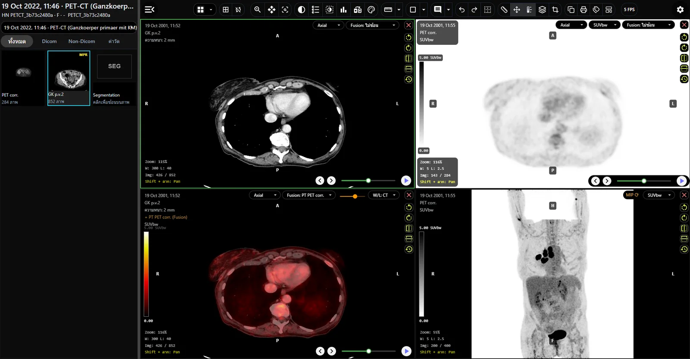
เลือกหัวข้อที่ต้องการ
สิ่งที่ต้องมี
- บัญชีผู้ใช้ Vantyx VNA ที่มีสิทธิ์ Studies › Open Viewer
- เบราว์เซอร์ Chrome หรือ Edge รุ่นล่าสุด (แนะนำจอความละเอียด 1920 × 1080 ขึ้นไป — toolbar จะแสดงปุ่มครบ)
- อนุญาตป๊อปอัปของเว็บไซต์ VNA (Viewer เปิดเป็นหน้าต่างแยก และเปิดบนจอที่ 2 ถ้ามี)
เริ่มต้นใช้งานเร็ว
- ในหน้า Studies ของ VNA กดไอคอน Open Viewer หรือดับเบิลคลิกที่แถวการตรวจ
- คลิก Series ทางซ้ายเพื่อแสดงในช่องที่เลือก (กรอบสีเขียว) หรือลากไปวางในช่องที่ต้องการ
- หมุนล้อเมาส์เพื่อเลื่อนภาพ · ลากปุ่มซ้าย = Pan · ลากปุ่มขวา = ปรับ W/L · ลากปุ่มกลาง = Zoom
- เลือกเครื่องมือวัดจาก toolbar เช่น Length แล้วลากบนภาพ — ค่าวัดบันทึกให้อัตโนมัติ
- ปรับค่าต่าง ๆ ของตัวเองได้ที่ ตั้งค่า Viewer
ภาพในคู่มือถ่ายจากระบบทดสอบด้วยข้อมูลสาธารณะที่ไม่มีข้อมูลระบุตัวตน (TCIA, CC BY 4.0) และข้อมูลจำลอง LOADTEST · ชื่อเครื่องมือบน toolbar เป็นภาษาอังกฤษในทั้งสองภาษา ส่วนคำอธิบายแสดงตามภาษาที่เลือก (ค่าเริ่มต้นภาษาไทย)
เริ่มต้น
การเปิด Viewer และการโหลดภาพ
ช่องทางเปิด Viewer ตัวบ่งชี้การโหลดภาพ และข้อความที่อาจพบเมื่อเปิดไม่ได้
ช่องทางเปิด Viewer
| ช่องทาง | วิธีใช้ |
|---|---|
| หน้า Studies / Patients / Favorites | กด Open Viewer ที่แถว หรือดับเบิลคลิกที่ HN, ชื่อ, อายุ, วันที่, modality, คำอธิบาย |
| หน้า Study Details | ปุ่ม Open Viewer ที่หัวแถบการตรวจ หรือคลิกภาพย่อ series เพื่อเปิดที่ series นั้น |
| ลิงก์ Viewer URL | ลิงก์ …/open-viewer?studyUID=… ที่คัดลอกจากหน้าเว็บ — ต้อง Login ก่อน ถ้าเบราว์เซอร์บล็อกป๊อปอัปให้กดปุ่ม “เปิด Viewer” |
| ระบบ HIS | HIS ขอลิงก์เปิดภาพผ่าน Integration Client — ลิงก์ใช้ได้ครั้งเดียว ภายใน 10 นาที (กด F5 รีเฟรชได้) |
- Viewer เปิดในหน้าต่างชื่อเดียวกันเสมอ — เปิดการตรวจใหม่ หน้าต่างเดิมจะถูกแทนที่
- ถ้าคอมพิวเตอร์มีจอ 2 จอขึ้นไป Viewer จะเปิดบนจอที่ 2
- กด F5 รีเฟรชหน้าต่าง Viewer ได้โดยไม่ต้อง Login ใหม่
ผู้ที่เปิดจาก HIS ใช้บัญชีร่วมของระบบ — วัด ปัก key image หรือปรับค่าได้เฉพาะหน้าต่างนั้น แต่ไม่ถูกบันทึก (มีข้อความแจ้ง “เปิดจาก HIS — …”) · Viewer Settings ของบัญชี HIS เป็นค่าเริ่มต้นเสมอ ปรับได้เฉพาะหน้าต่างนั้น
ระหว่างโหลดภาพ
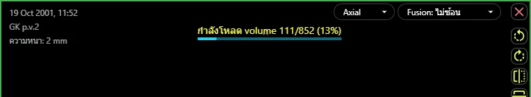
- แต่ละช่องแสดงความคืบหน้า เช่น “กำลังโหลดภาพ 40/120 · โหลดแล้ว 95/120” (ภาพ 2D — ตัวหน้าคือภาพรอบ ๆ ที่กำลังดู ตัวหลังคือทั้ง series), “กำลังโหลดไฟล์ 35% (52/150 MB)” (multi-frame), “กำลังโหลด volume 427/852 (50%)” (MPR / 3D)
- ถ้าการโหลดใช้เวลาเกินครึ่งวินาที พื้นที่ภาพจะมืดลงพร้อมวงหมุน — toolbar กดไม่ได้จนกว่าจะโหลดเสร็จ (ข้อความ “รอโหลดภาพให้เสร็จก่อน”)
- ภาพย่อ series ที่ยังไม่มาแสดงวงหมุน ถ้าสร้างภาพย่อไม่ได้จะขึ้น “ไม่มีภาพตัวอย่าง” · ภาพย่อเริ่มโหลดหลังภาพแรกของช่องแสดงแล้ว และโหลดพร้อมกันไม่เกิน 4 รูป — การตรวจที่มี series มากจะเห็นภาพย่อทยอยขึ้น
ข้อความเมื่อเปิดไม่ได้
| ข้อความ | สาเหตุ / วิธีแก้ |
|---|---|
| ไม่ได้ระบุ Study ใน URL — เปิด viewer จากรายการ Study | เปิดหน้า Viewer โดยตรงโดยไม่มีการตรวจ — เปิดจากหน้า Studies |
| ไม่มีสิทธิ์เข้าถึง | ไม่ได้รับการยืนยันตัวตนภายใน 10 วินาที — เปิดจากหน้าเว็บ VNA ที่ Login อยู่ หรือ Login ใหม่ |
| ลิงก์เปิด Viewer ไม่ถูกต้อง หมดอายุ หรือถูกใช้ไปแล้ว | ลิงก์จาก HIS ใช้ซ้ำหรือเกิน 10 นาที — เปิดจาก HIS ใหม่ |
| ไม่พบ Study หรือ Study นี้อยู่นอกขอบเขตแผนกของคุณ | การตรวจถูกลบ อยู่นอกแผนก หรือเป็น VIP ของผู้อื่น — ติดต่อแผนกต้นทาง |
| ยังไม่รองรับการแสดง … (RTPLAN / REG / PR) | คลิก series ที่ไม่ใช่ภาพ เช่น RT Plan, Registration, Presentation State — Viewer ยังไม่แสดงชนิดนี้ |
ข้อความแจ้งเตือนอื่น ๆ แสดงเป็นแถบมุมจอ ปิดด้วย หรือหายเองตามเวลา
เริ่มต้น
ส่วนประกอบหน้าจอ
หน้าจอ Viewer แบ่งเป็น 3 ส่วน: Toolbar ด้านบน แถบข้าง (series และไฟล์) ด้านซ้าย และพื้นที่ช่องแสดงภาพ
| ส่วน | รายละเอียด | ดูต่อ |
|---|---|---|
| Toolbar | ปุ่มแสดง/ซ่อนแถบข้าง เลือก template / layout, sync และเครื่องมือทุกหมวด ปุ่ม FPS และ ตั้งค่า | ภาพรวม Toolbar |
| แถบข้าง | ข้อมูลผู้ป่วย ประวัติการตรวจ แท็บ ทั้งหมด / Dicom / Non-Dicom / ค่าวัด | แถบข้าง |
| ช่องแสดงภาพ | สูงสุด 9 ช่อง แต่ละช่องมีข้อมูลมุมภาพ ปุ่มควบคุม และแถบเลื่อนภาพ | ช่องแสดงภาพ |
Toolbar โดยย่อ
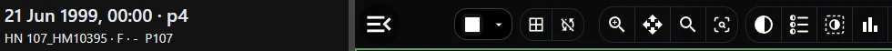
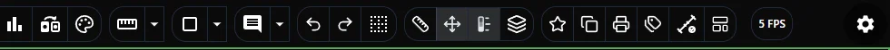
ถ้าหน้าต่างแคบ toolbar จะยุบหมวดเครื่องมือเข้าเมนู “เครื่องมืออื่น” อัตโนมัติ — ขยายหน้าต่างให้กว้างเพื่อเห็นปุ่มครบ
Viewer ใช้ธีมมืดเสมอ (ไม่มีปุ่มสลับธีมในหน้าต่าง Viewer) · ภาษาไทย/อังกฤษเปลี่ยนได้ที่ Viewer Settings › ทั่วไป
หน้าจอหลัก
แถบข้าง (Series / ไฟล์ / ค่าวัด)
แถบด้านซ้ายแสดงข้อมูลผู้ป่วย รายการการตรวจ series ภาพ ไฟล์แนบ (Non-DICOM) key image และรายการค่าวัด
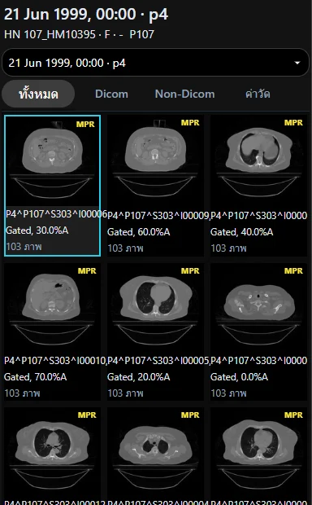
ข้อมูลผู้ป่วยและประวัติการตรวจ
- บรรทัดบน: วันเวลาตรวจ · คำอธิบายการตรวจ · บรรทัดถัดมา: HN · เพศ · อายุ ณ วันตรวจ (เช่น
45y3m) · ชื่อผู้ป่วย - ช่อง ประวัติการตรวจ แสดงการตรวจทั้งหมดของผู้ป่วย — เลือกเพื่อเปิดการตรวจนั้นในหน้าต่างเดิม
- การตรวจของแผนกอื่นที่คุณเปิดไม่ได้ อยู่ในกลุ่ม “นอกขอบเขตแผนก (เปิดไม่ได้)” เป็นสีเทา พร้อมบรรทัด “นอกแผนก · ชื่อแผนก” — ไม่ถูกใช้เป็นการตรวจครั้งก่อนของ Compare / Fusion prior / hanging protocol
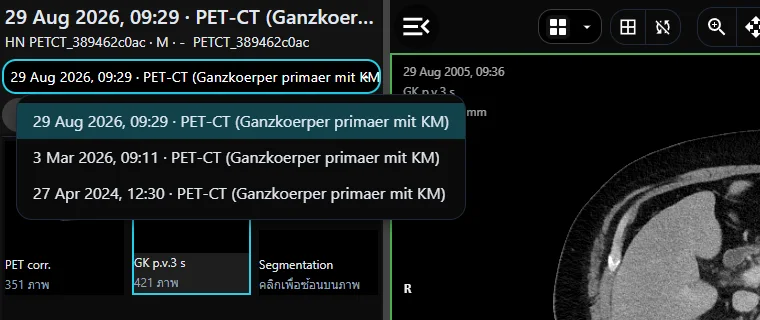
แท็บในแถบข้าง
| แท็บ | แสดง |
|---|---|
| ทั้งหมด | ภาพ DICOM ด้านบน และไฟล์แนบด้านล่าง ลากเส้นแบ่งตรงกลางเพื่อปรับสัดส่วน 20–50% (จำไว้ในเบราว์เซอร์ของเครื่องนั้น) |
| Dicom | เฉพาะ series ภาพ DICOM |
| Non-Dicom | เฉพาะไฟล์แนบ (เอกสาร รูป วิดีโอ เสียง) |
| ค่าวัด | รายการค่าที่วัดในการตรวจนี้ (เฉพาะคอมพิวเตอร์) — ดู รายการค่าวัด |
ภาพย่อ Series
- แต่ละการ์ดแสดงภาพตัวอย่าง คำอธิบาย series และจำนวนภาพ เช่น “103 ภาพ” — รายงาน PDF / SR, ECG Waveform และวิดีโอมีการ์ดของตัวเอง
- ป้าย MPR สีเหลืองมุมขวาบน = series CT / MR / PT / NM ที่มีตั้งแต่ 40 ภาพ และ server ตรวจแล้วว่าเรียงเป็น volume ได้ — น่าจะดูแบบ MPR / 3D ได้ (ยืนยันจริงอีกครั้งตอนเปิด)
- series ของช่องที่ active มีกรอบสีฟ้า (เปลี่ยนตามช่องที่คลิก) · SEG ที่ซ้อนอยู่มีกรอบสีเขียว · RTSTRUCT ที่ซ้อนอยู่มีกรอบสีฟ้าอ่อน · การ์ด SEG / RTSTRUCT บอกสถานะใต้ชื่อ: “คลิกเพื่อซ้อนบนภาพ”, “ซ้อนอยู่ · คลิกเพื่อเอาออก”, “ไม่มีบริเวณที่ตัดไว้”, “แสดงไม่ได้ · คลิกเพื่อลองใหม่”
- คลิก = แสดงในช่องที่ active · ลากไปวางในช่องใดก็ได้ (ช่องว่างแสดง “วาง Series ที่นี่”)
- คลิก/ลากการ์ด SEG หรือ RTSTRUCT = ซ้อนบนภาพต้นทาง (ไม่แทนที่ภาพ) — ดู SEG และ RTSTRUCT
- ขณะอยู่ในผัง MPR / 3D การ์ดที่ทำ MPR ไม่ได้แน่ ๆ (SR, PDF, ECG, วิดีโอ, ภาพน้อยกว่า 40) จะคลิกหรือลากไม่ได้ · series ที่ไม่ใช่ภาพ (SEG, RTSTRUCT, รายงาน) อยู่ท้ายรายการเสมอ
ไฟล์แนบ (Non-DICOM)
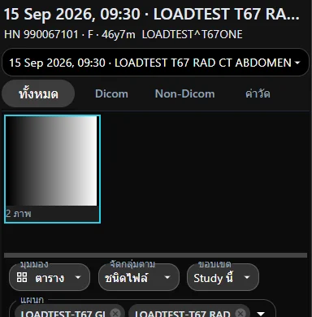
| ตัวเลือก | ค่า |
|---|---|
| มุมมอง | ตาราง (ค่าเริ่มต้น) / รายการ (แบบเส้นเวลา) |
| จัดกลุ่มตาม | ชนิดไฟล์ ( เอกสาร · ภาพ · วิดีโอ · เสียง) / วันที่ / แผนก |
| ขอบเขต | Study นี้ (ค่าเริ่มต้น) / ผู้ป่วย (ไฟล์ของทุกการตรวจของผู้ป่วย) |
| แผนก | เลือกแผนกที่จะแสดง (ต้องเลือกอย่างน้อย 1) |
- คลิกการ์ดเพื่อเปิด: PDF / Word / Excel / PowerPoint / txt เปิดในหน้าต่างอ่านเอกสาร · รูป (รวม TIFF) เปิดเป็นแกลเลอรี · วิดีโอและเสียงเล่นในการ์ด (ปุ่มขยายวิดีโอ)
- ถ้าการตรวจนี้ไม่มีไฟล์แนบ แถบกรองจะไม่แสดง
- ไฟล์วิดีโอที่กำลังแปลงไฟล์ยังไม่แสดง
รายการ Key images
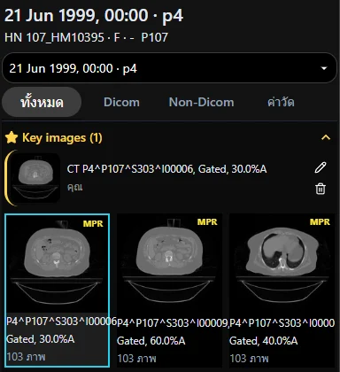
- แสดงเมื่อการตรวจมี key image — คลิกหัวข้อเพื่อยุบ/ขยาย ()
- แต่ละแถว: ชื่อ series · Frame · ผู้ปัก (คุณ / ผู้ใช้อื่น) และโน้ต — เปิดจาก HIS จะมีคำว่า “ไม่ได้บันทึก”
- คลิกแถวเพื่อกระโดดไปยังภาพนั้น (เฉพาะผัง 2D — ในผัง MPR / 3D ขึ้น “กระโดดไป Key Image ได้ใน Layout 2D — เปลี่ยน Template ก่อน”) · แถวของคุณมีปุ่ม แก้โน้ต และ เอาออกจาก key image
- วิธีปัก key image ดู Key image
ซ่อนและปรับขนาดแถบข้าง
- ปุ่ม / ซ้ายสุดของ toolbar = แสดง / ซ่อนแถบข้าง
- ลากเส้นขอบขวาของแถบข้าง (เปลี่ยนเป็นสีเขียวเมื่อชี้) เพื่อปรับความกว้าง 20–50% ของหน้าจอ · ดับเบิลคลิกเส้นเพื่อกลับค่าเริ่มต้น
- จอแคบกว่า 900 px แถบข้างจะลอยทับภาพ แตะพื้นหลังเพื่อปิด
หน้าจอหลัก
ช่องแสดงภาพ (Viewport)
ข้อมูลบนภาพ ปุ่มควบคุมของแต่ละช่อง การเลื่อนภาพและเล่น cine การขยายช่องเต็มจอ และเมนูคลิกขวา
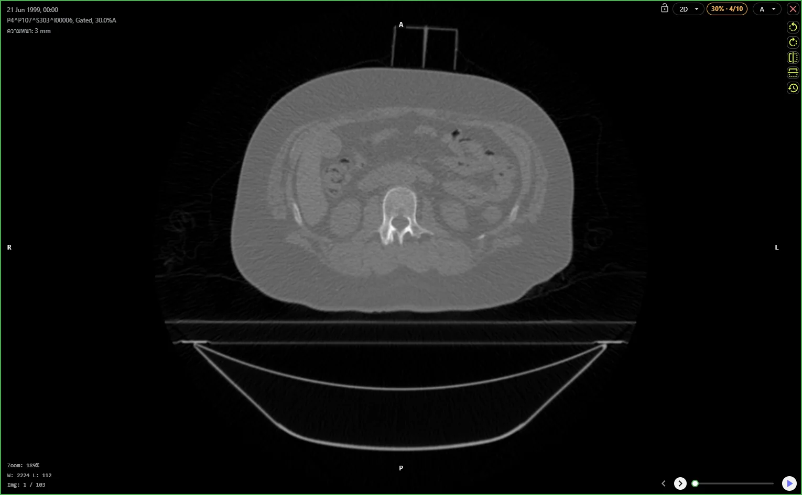
ช่องที่กำลังใช้งาน (Active)
- ช่องที่ active มีกรอบสีเขียว — เครื่องมือ preset และคีย์ลัดทำงานกับช่องนี้
- ช่องจะ active เมื่อคลิก หมุนล้อเมาส์บนช่อง หรือวาง series ลงช่อง
- จำนวนช่องและผังเปลี่ยนได้จาก toolbar (Layout / Template) — 1x1 ถึง 3x3 รวม 1x4 / 2x4 สูงสุด 9 ช่อง
ข้อมูลบนภาพ (Overlay)
| ตำแหน่ง | ข้อมูล |
|---|---|
| ซ้ายบน | วันเวลาของ series · คำอธิบาย series · ความหนา (CT) · บรรทัดสถานะ SUV / Fusion / SEG / RTSTRUCT เมื่อมี |
| ซ้ายล่าง | ค่าเริ่มต้น: Zoom: 125% · W: 400 L: 40 · Img: 12 / 240 — เลือกข้อมูลเองได้ที่ Settings › Overlay |
| ขวาล่าง | ว่าง (ตั้งค่าเพิ่มได้ เช่น ชื่อผู้ป่วย HN เพศ/อายุ Modality) |
| กลางขอบภาพ | อักษรทิศ A/P/R/L/H/F (ชี้เมาส์เพื่อดูความหมาย) — ตัวอักษรหลายตัว = ระนาบเอียง |
| กลางบน | ป้าย ★ Key image (เหลือง = ของคุณ, ฟ้า = ของผู้อื่น) · ป้าย “ผู้ใช้ Calibrate เอง” เมื่อปรับมาตราส่วนเอง |
บนผัง MPR / 3D มีคำแนะนำสีเหลือง “Shift + ลาก: Pan” (ช่อง 3D และช่อง MPR ที่ปิด crosshair) · ตอนเปิด Volume crop มี “Ctrl + ลาก: หมุนกล่อง ภาพไม่หมุน” · ช่อง MPR ที่เปิด crosshair ใช้ Shift + ลากซ้าย = W/L (ดู Crosshair)
ปุ่มควบคุมของแต่ละช่อง
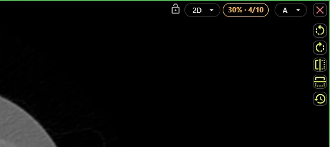
| ปุ่ม | หน้าที่ |
|---|---|
| / | ล็อกช่องนี้ไม่ให้ sync กับช่องอื่น (สีเหลือง = ล็อกอยู่) |
| 2D ▾ | ชนิดการแสดงผล 2D / 3D (CT, MR, PT, NM ที่มีมากกว่า 19 ภาพ) |
| A ▾ | กลุ่ม sync A–D — ช่องในกลุ่มเดียวกันเลื่อน ซูม และปรับ W/L ไปพร้อมกันเมื่อเปิด Sync · ผัง MPR / Fusion / Compare จัดกลุ่มให้เองและซ่อนตัวเลือกนี้ |
| นำ series ออกจากช่องนี้ | |
| / | หมุนทวนเข็ม / ตามเข็ม 90° (Shift+L / Shift+R) |
| พลิกแนวนอน (Shift+H) — ปุ่มถัดไปคือพลิกแนวตั้ง (Shift+V) | |
| รีเซ็ตมุมมองของช่องนี้ — zoom, pan, หมุน, พลิก, W/L (Home) · ช่อง MPR คืน Slab เป็น Normal และคืนกล่อง Volume crop ด้วย · มีผลเฉพาะช่องนี้แม้อยู่ในกลุ่ม sync | |
| Reset oblique — แสดงเมื่อระนาบ MPR ถูกหมุนเอียง ปรับทุกระนาบกลับตั้งฉาก |
ช่องบางชนิดมีตัวเลือกเพิ่ม เช่น preset 3D และ คุณภาพ/แสง (ช่อง 3D), ชนิด SUV (PET), Fusion, SEG, RT, Phase — อธิบายในหน้าโหมดขั้นสูง
เลื่อนภาพและเล่น Cine
- หมุนล้อเมาส์บนภาพเพื่อเลื่อนทีละภาพ หรือใช้แถบมุมขวาล่าง: / ภาพก่อน/ถัดไป · ลาก slider · เล่น / หยุด
- ความเร็วปรับที่ปุ่ม FPS บน toolbar · ค่าเริ่มต้น การวนเล่น และ Yoyo ตั้งที่ Settings › Layout
- เมื่อเปิด Sync การเล่นจะเริ่ม/หยุดพร้อมกันทั้งกลุ่ม
- ตำแหน่งภาพปัจจุบันดูที่บรรทัด
Img:มุมซ้ายล่าง
ขยายช่องเต็มพื้นที่ (ดับเบิลคลิก)
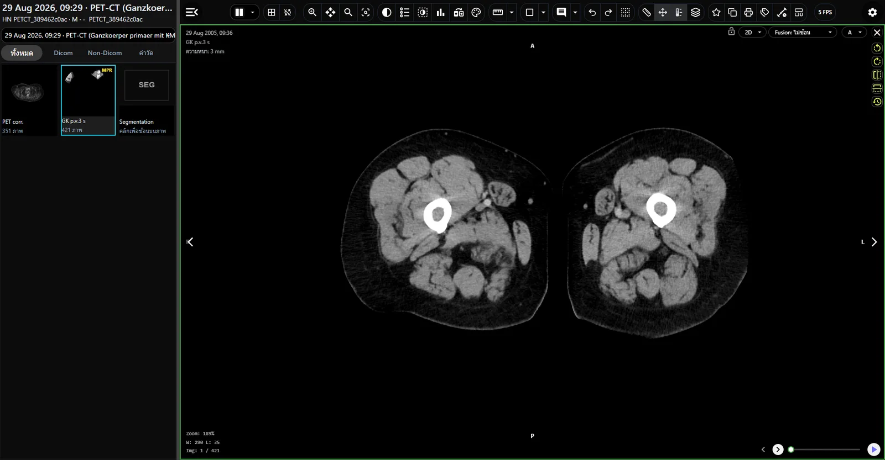
- ดับเบิลคลิกช่องที่มีภาพเพื่อขยายเต็มพื้นที่ (zoom/pan ของช่องนั้นถูกรีเซ็ต) · ดับเบิลคลิกอีกครั้งหรือกด “คืน Layout เดิม” เพื่อกลับ
- ถ้ามีหลายช่อง ใช้ ภาพก่อนหน้า / ภาพถัดไป สลับไปช่องอื่น
เมนูคลิกขวา
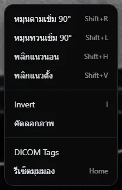
ปุ่มขวาของเมาส์ใช้ปรับ W/L เป็นค่าเริ่มต้น จึงต้องกด Shift + คลิกขวาเพื่อเปิดเมนู (หรือตั้งปุ่มขวาเป็น “— ไม่ใช้ —” ใน Settings › เมาส์) · เมนูมี หมุน 90° ตาม/ทวนเข็ม, พลิกแนวนอน/แนวตั้ง, Invert, คัดลอกภาพ, DICOM Tags, รีเซ็ตมุมมอง พร้อมคีย์ลัด · ช่องที่มีแว่นขยาย (Advanced Magnify) มีรายการ “เอาแว่นขยายออก” และคลิกขวาในแว่นจะเห็นเฉพาะตัวเลือกกำลังขยาย · คลิกขวาซ้ำบนฉากหลัง = ปิดเมนู
หน้าจอหลัก
เมาส์ คีย์บอร์ด และการสัมผัส
การใช้เมาส์เมื่อยังไม่ได้เลือกเครื่องมือ คีย์ลัดเริ่มต้น และท่าทางบนจอสัมผัส — เปลี่ยนได้ใน Viewer Settings
ปุ่มเมาส์ (ค่าเริ่มต้น)
| ช่องชนิด | ปุ่มซ้าย | ปุ่มขวา | ปุ่มกลาง | ล้อเมาส์ |
|---|---|---|---|---|
| 2D (stack) | Pan | W/L | Zoom | เลื่อนภาพ |
| MPR | Pan | W/L | Zoom | เลื่อนภาพ |
| 3D | หมุน | W/L | Zoom | Zoom |
- เลือกเครื่องมือบน toolbar = ปุ่มซ้ายเปลี่ยนเป็นเครื่องมือนั้น · กดปุ่มเดิมอีกครั้งเพื่อปล่อยกลับเป็นค่าเริ่มต้น
- ช่อง MPR และ 3D: Shift + ลากปุ่มซ้าย = Pan เสมอ
- เปลี่ยนการผูกปุ่มเมาส์ได้ที่ Settings › เมาส์
คีย์ลัดเริ่มต้น
| คีย์ | คำสั่ง | คีย์ | คำสั่ง |
|---|---|---|---|
| W | W/L | Ctrl+Z | Undo |
| Z | Zoom | Ctrl+Y | Redo |
| P | Pan | Shift+R | หมุน 90° ตามเข็ม |
| M | Magnify | Shift+L | หมุน 90° ทวนเข็ม |
| I | Invert | Shift+H | พลิกแนวนอน |
| L | Length | Shift+V | พลิกแนวตั้ง |
| A | Angle | Home | รีเซ็ตมุมมอง |
| B | Bidirectional | K | Key image |
| R | Rect ROI | [ / ] | Phase ก่อนหน้า / ถัดไป |
| E | Ellipse ROI | V | Probe |
| C | Circle ROI | T | Arrow Annotate |
คีย์ที่เปลี่ยนไม่ได้
- 1–9 = ใช้ W/L preset ลำดับที่ 1–9 ของ modality นั้นกับช่องที่ active (อ่านตามตำแหน่งปุ่ม ใช้ได้แม้แป้นพิมพ์เป็นภาษาไทย · แป้นตัวเลข numpad ต้องเปิด NumLock · Shift/Ctrl + ตัวเลข ไม่นับ)
- Delete = ลบค่าวัด/annotation ที่เลือก · Esc = ยกเลิกการวาดที่กำลังทำ
- Ctrl+P = เปิดหน้าต่างพิมพ์ของ Viewer (แทนการพิมพ์ทั้งหน้าเว็บ)
- คีย์ลัดที่ตั้งเองอ่านตามตำแหน่งปุ่มบนแป้น ใช้ได้แม้แป้นพิมพ์เป็นภาษาไทย · ไม่ทำงานขณะพิมพ์ในช่องข้อความ, ขณะหน้าต่างใด ๆ เปิดอยู่ (Settings, Print, DICOM Tags) หรือเมื่อเครื่องมือนั้นใช้กับช่องที่ active ไม่ได้ (เช่น CTR บนภาพ CT) · เครื่องมือที่ซ่อนจาก toolbar ยังเรียกด้วยคีย์ลัดได้
เปลี่ยนคีย์ลัดได้ที่ Settings › ปุ่มลัด
จอสัมผัส
| อุปกรณ์ | 1 นิ้ว | 2 นิ้ว | 3 นิ้ว |
|---|---|---|---|
| คอมพิวเตอร์จอสัมผัส | เครื่องมือของปุ่มซ้าย | บีบ = Zoom · ลาก = Pan | ลาก = เลื่อนภาพ |
| มือถือ / แท็บเล็ต | Pan | บีบ = Zoom | — (ใช้แถบเลื่อนภาพ) |
เครื่องมือ (Toolbar)
ภาพรวม Toolbar
แถบเครื่องมือด้านบนเรียงจากซ้ายไปขวา: ตัวเลือกผังหน้าจอ → หมวดเครื่องมือ 8 หมวด → ความเร็ว cine → ตั้งค่า
การใช้ปุ่มบน Toolbar
- ชี้เมาส์ที่ปุ่มเพื่อดูชื่อและคำอธิบาย เช่น “Length — วัดระยะ”
- ปุ่มเครื่องมือ (เช่น Zoom, Length): คลิกเพื่อผูกกับปุ่มซ้ายของเมาส์ (ปุ่มเป็นสีไฮไลต์) · คลิกอีกครั้งเพื่อปล่อย
- ปุ่มคำสั่ง (เช่น Invert, Undo): ทำงานทันทีกับช่องที่ active
- ปุ่มเปิด/ปิด (เช่น Scale bar): สลับการแสดงผล
- หมวดแบบเมนู Measure / ROI / Annotate: ปุ่มหลักแสดงเครื่องมือล่าสุดของหมวด กด เพื่อเลือกเครื่องมืออื่นในหมวด · เปิด Viewer ใหม่ปุ่มหลักกลับเป็นตัวแรกของหมวด · หมวดที่เหลือเครื่องมือเดียวไม่มี ▾
- ปุ่มแบบแผง (W/L presets, W/L histogram, Colormap, Slab): มีเมนู/แผงของตัวเอง ไม่อยู่ในเมนู ▾ และตั้งคีย์ลัดไม่ได้
- ปุ่มที่ใช้ไม่ได้กับช่องนั้นจะถูกซ่อน (เช่น CTR ใช้กับ CR/DX เท่านั้น) · ระหว่างโหลดภาพ toolbar กดไม่ได้
ผังหน้าจอ: Template · Layout · Sync
| ปุ่ม | หน้าที่ |
|---|---|
| แสดง / ซ่อนแถบข้าง | |
| ▦ ▾ Template | เลือกผังสำเร็จรูป (รายการด้านล่าง) |
| MPR เปิด | เปิด/ปิด crosshair — แสดงเฉพาะผัง MPR และผังที่มีระนาบ 3 ช่อง (ดู MPR) |
| / Ref Line | แสดงเส้นอ้างอิงตำแหน่งระนาบของช่อง active บนช่อง CT/MR อื่นในกลุ่ม sync เดียวกัน — แสดงเมื่อกลุ่ม sync มีช่อง CT/MR 2D 2–3 ช่องที่คำอธิบาย series มีชื่อระนาบ (axial / coronal / sagittal) ไม่ใช่ topogram และมีมากกว่า 10 ภาพ · เปิดแล้วช่องเหล่านั้นถูกโหลดใหม่เป็น volume (series ที่ลากลงช่องระหว่างเปิดก็เป็น volume) · ปิด = โหลดกลับเป็น 2D ที่ภาพเดิม · เปิดอัตโนมัติได้ที่ Settings › Layout |
| Layout | เลือกจำนวนช่อง 1x1 ถึง 3x3 รวม 1x4 และ 2x4 (เลือกแล้ว template กลายเป็น Manual) |
| / Sync | เปิด/ปิดการ sync ทุกกลุ่ม (เลื่อนภาพ, pan/zoom, W/L) — กลุ่ม A–D และการล็อกตั้งที่ปุ่มของแต่ละช่อง · ค่าเริ่มต้นปิด (ตั้งให้เปิดตั้งแต่เปิด Viewer ได้ที่ Settings › Layout) |
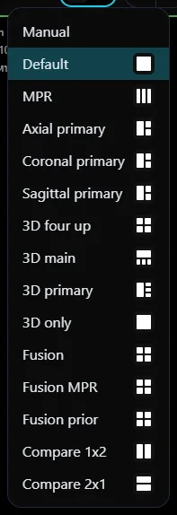
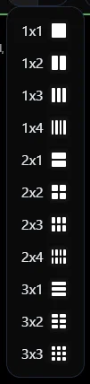
| Template | ผัง |
|---|---|
| Manual / Default | จัดเอง / ผังเริ่มต้นตามชนิดการตรวจ |
| MPR | 1x3: axial | coronal | sagittal พร้อม crosshair |
| Axial / Coronal / Sagittal primary | ระนาบหลักช่องใหญ่ + อีกสองระนาบ |
| 3D four up · 3D main · 3D primary · 3D only | ภาพ 3D ร่วมกับระนาบ MPR หรือ 3D อย่างเดียว (ดู 3D) |
| Fusion · Fusion MPR · Fusion prior | ผัง PET/CT — ต้องมีทั้งภาพ PET (หรือ NM) และ CT (หรือ MR) ในการตรวจ มิฉะนั้นขึ้น “Template Fusion ต้องมีทั้งภาพ PET (หรือ NM) และ CT (หรือ MR) ใน Study นี้” (ดู PET/CT) |
| Compare 1x2 · Compare 2x1 | เทียบกับการตรวจครั้งก่อน (ดู Compare) |
หมวดเครื่องมือ
| หมวด | เครื่องมือ | ดูต่อ |
|---|---|---|
| Navigate | Navigate | |
| Window/Level | Window/Level | |
| Measure ▾ | Measure | |
| ROI ▾ | ROI | |
| Annotate ▾ | Annotate | |
| Edit | Edit | |
| View | View | |
| More | More |
ปลายขวาของ Toolbar
- 5 FPS Cine FPS — ความเร็วเล่น cine 1–30 ภาพ/วินาที (มีผลเฉพาะครั้งนี้ ค่าเริ่มต้นตั้งที่ Settings › Layout) — เมื่อ toolbar แคบจะเป็นปุ่มเปิดแถบเลื่อน
- เครื่องมืออื่น — แสดงเมื่อหน้าต่างแคบ หมวดที่ยุบจะอยู่ในเมนูนี้ (ยุบตามลำดับ More → Navigate → View → Edit → Annotate) · ถ้าเครื่องมือที่เลือกอยู่ในเมนู ปุ่มจะแสดงไอคอนของเครื่องมือนั้น
- ตั้งค่า Viewer — ดู Viewer Settings
ซ่อน / เรียงลำดับเครื่องมือ หรือดึงเครื่องมือออกจากเมนู ▾ มาเป็นปุ่มเดี่ยวได้ที่ Settings › Toolbar
เครื่องมือ (Toolbar)
Measure และ ROI — การวัด
เครื่องมือวัดระยะ มุม พื้นที่ และค่าพิกเซล พร้อมวิธีแก้ไข ลบ และดูรายการค่าวัด — ค่าวัดบันทึกให้อัตโนมัติ
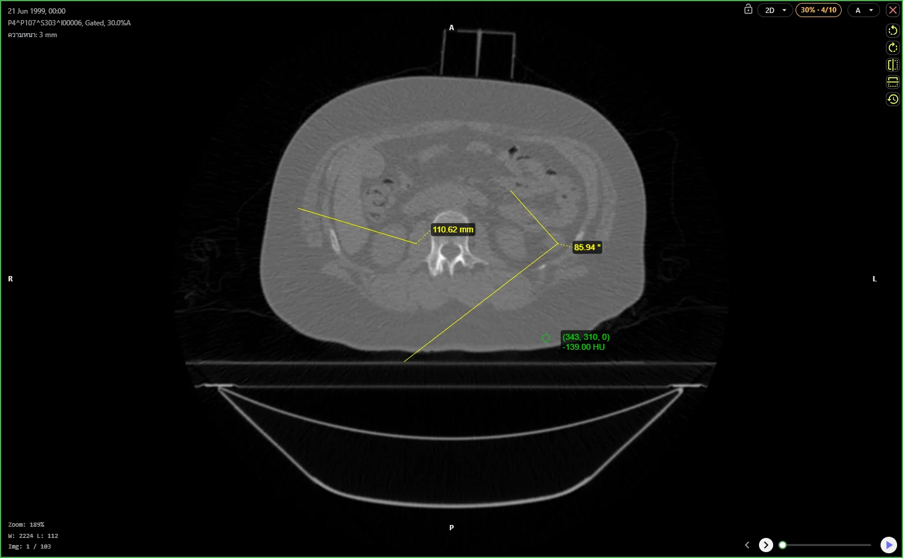
Measure ▾
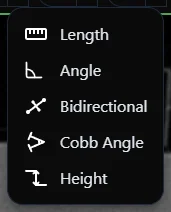
| เครื่องมือ | วิธีวาด | หมายเหตุ |
|---|---|---|
| Length L | ลาก (หรือคลิก 2 จุด) | ระยะทาง (mm) |
| Angle A | คลิก 3 จุด | มุม (องศา) |
| Bidirectional B | ลากแกนยาว แกนสั้นตั้งฉากสร้างให้ ปรับด้วยจุดจับ | แกนยาว × แกนสั้น |
| Cobb Angle | ลากเส้น 2 เส้น | มุมระหว่าง 2 เส้น (กระดูกสันหลังคด) |
| Height | ลากเส้น | ความต่างระดับแนวตั้งบนจอ (เส้นเอียงจะสั้นกว่า Length) |
| CTR | ลากเส้น 2 เส้นลำดับใดก็ได้ — เส้นที่กว้างกว่า = ทรวงอก | อัตราส่วนหัวใจต่อทรวงอก (นับเฉพาะแนวนอน) ค่าเกิน 0.5 เป็นสีส้ม · ภาพ AP เตือน “AP view — CTR อาจสูงกว่าจริง” · CR/DX เท่านั้น |
| US Directional | วัดในกรอบ Doppler / M-mode | US เท่านั้น — วาดนอกกรอบจะถูกลบ · วัดบน B-mode ใช้ Length |
ROI ▾
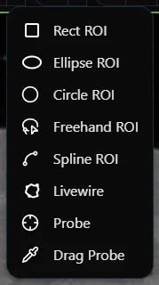
| เครื่องมือ | วิธีวาด | ผล |
|---|---|---|
| Rect ROI R | ลากมุมถึงมุม | พื้นที่ ค่าเฉลี่ย ต่ำสุด สูงสุด SD ในกรอบ |
| Ellipse ROI E | ลากมุมถึงมุม | สถิติในวงรี |
| Circle ROI C | ลากมุมถึงมุม | สถิติในวงกลม |
| Freehand ROI | กดค้างแล้ววาด | รูปปิด = พื้นที่และสถิติ + เส้นรอบรูป · เส้นเปิด = ความยาว |
| Spline ROI | คลิกทีละจุด ดับเบิลคลิก/คลิกจุดแรกเพื่อปิด | เส้นโค้งผ่านจุดที่คลิก |
| Livewire | คลิกทีละจุด | เส้นวิ่งตามขอบอวัยวะเอง |
| PET VOI box · PET VOI circle | วาดกล่อง/ทรงกระบอก 3D ครอบก้อน | SUV ในปริมาตร (ดู PET VOI) · เฉพาะช่อง PET MPR / Fusion |
| Probe V | คลิกจุด | ค่าพิกเซล (CT = HU) ค้างบนภาพ |
| Drag Probe | กดค้างแล้วลาก | ค่าพิกเซลใต้เมาส์ หายเมื่อปล่อย (ไม่บันทึก) |
บนระนาบ MPR ที่หมุนเอียง (oblique) ROI จะแสดง “Area: คำนวณบนระนาบเอียงไม่ได้” — วัดพื้นที่ได้บนระนาบตั้งฉากเท่านั้น
แก้ไขและลบค่าวัด
- เลือก: คลิกที่ค่าวัด (เปลี่ยนเป็นสีเขียว) หรือคลิกแถวในแท็บ “ค่าวัด” (กระโดดไปยังภาพนั้นด้วย)
- แก้ไข: ลากจุดจับของค่าวัด · ลบ: เลือกแล้วกด Delete
- Clear: ลบทุก annotation บนภาพปัจจุบันของช่อง active ในครั้งเดียว
- Undo Ctrl+Z / Redo Ctrl+Y ย้อน/ทำซ้ำได้ทั้งการวาด ลบ และ Clear
- ค่าวัดของผู้ใช้อื่นแสดงเป็นอีกสีและล็อกไว้ (อ่านอย่างเดียว) — Delete และ Clear จะข้าม
- สี ความหนาเส้น ขนาดตัวอักษร และทศนิยม ตั้งที่ Settings › Annotation
บันทึกอัตโนมัติ — ค่าวัดถูกบันทึกบนเซิร์ฟเวอร์ราว 1 วินาทีหลังวาด/แก้ไข ไม่มีปุ่มบันทึก · ยกเว้นเปิดจาก HIS หรือภาพที่ไม่มีข้อมูล Study/Series (เช่น Secondary Capture บางชนิด) ค่าวัดจะหายเมื่อปิด viewer
รายการค่าวัด (แท็บ ค่าวัด)
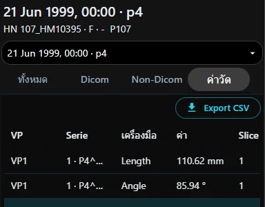
- คลิกแถวเพื่อเลือกค่าวัดและกระโดดไปยังภาพนั้น · เลือกแล้วกด Delete เพื่อลบ
- Export CSV = ดาวน์โหลดค่าวัดทั้งตาราง (พร้อมสถิติของ ROI) เป็นไฟล์ CSV เปิดใน Excel ได้ — ในไฟล์ไม่มีชื่อผู้ป่วย/HN มีเฉพาะ Study UID และ Accession ต่อแถว · ทศนิยมตาม Settings › Annotation · ระบบบันทึก audit ทุกครั้งที่ส่งออก
- มีบนคอมพิวเตอร์เท่านั้น (ไม่มีบนมือถือ/แท็บเล็ต)
เครื่องมือ (Toolbar)
Annotate · Edit · View
เขียนข้อความและลูกศรบนภาพ ติดป้ายกระดูกสันหลัง ย้อน/ทำซ้ำ และสลับการแสดงผลต่าง ๆ บนภาพ
Annotate ▾
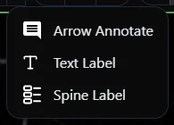
| เครื่องมือ | การใช้งาน |
|---|---|
| Arrow Annotate T | ลากลูกศร แล้วพิมพ์ข้อความในกล่องของเบราว์เซอร์ที่ขึ้นมา (กด OK) · ดับเบิลคลิกข้อความเพื่อแก้ |
| Text Label | คลิกจุด แล้วพิมพ์ข้อความ |
| Spine Label | คลิกกระดูกสันหลังทีละปล้อง ระบบตั้งชื่อ C1…S1 ต่อกันให้ (CT / MR / CR / DX) |
ตัวเลือก Spine Label
- เมื่อเลือก Spine Label จะมีปุ่ม “ตัวเลือก Spine Label” เพิ่มบน toolbar (เปิดให้ครั้งแรกอัตโนมัติ)
- เลือก นับลง ↓ / นับขึ้น ↑ และเลือก ป้ายถัดไป จากตารางชื่อปล้อง · ปุ่มแดง “ลบป้ายกระดูกทั้งชุด” (Undo คืนได้)
- คลิกป้ายที่วางแล้วเพื่อ “เปลี่ยนชื่อป้าย” — สวิตช์ “เลื่อนป้ายอื่นตาม (Renumber)” เปิดเป็นค่าเริ่มต้น
Edit
| ปุ่ม | หน้าที่ |
|---|---|
| Undo Ctrl+Z | ย้อนการแก้ไขล่าสุด (ประวัติเดียวรวมทุกช่อง) |
| Redo Ctrl+Y | ทำซ้ำสิ่งที่ย้อนไป — วาดใหม่แล้วรายการ Redo จะถูกล้าง |
| Clear | ลบ annotation ทั้งหมดบนภาพนี้ (Undo ครั้งเดียวคืนทั้งหมด) และปิด crosshair |
View
| ปุ่ม | หน้าที่ |
|---|---|
| Scale bar | แสดงแถบมาตราส่วนสีเหลืองที่ขอบล่างและขอบขวา |
| Orientation labels | แสดงอักษรทิศ A/P/R/L/H/F ที่ขอบภาพ (เปิดเป็นค่าเริ่มต้น — ปุ่มนี้สลับเฉพาะครั้งนี้ ตั้งถาวรที่ Settings › Layout) · ภาพที่ไม่มีข้อมูลทิศ ภาพ 3D และภาพบนมือถือไม่แสดง |
| Colorbar | แท่งสีที่ขอบซ้ายของช่อง Fusion (ชั้น PET) / ภาพที่ใส่ Colormap / PET-NM — ลากบนแท่งเพื่อปรับ W/L ชี้เพื่อดูค่า (เปิดเป็นค่าเริ่มต้น — ตั้งถาวรที่ Settings › Layout) |
| Orientation cube | กล่องบอกทิศในช่อง 3D |
| Slab (MIP/MinIP/AIP) | ภาพฉายแบบหนา — ดู Slab |
| Reset oblique (MPR) | ปรับระนาบ MPR ที่หมุนเอียงกลับตั้งฉาก (ซ่อนเป็นค่าเริ่มต้น เปิดได้ใน Settings › Toolbar) |
| Volume crop | ตัดก้อน 3D ด้วยกล่อง — ดู Volume crop |
| Mammo fit | จัดภาพ MG ทุกช่องให้เข้าคู่ (MG เท่านั้น) |
| Mammo lock | ซูม/เลื่อนภาพ MG ไปพร้อมกัน (ข้าง R/L เลื่อนสวนกันในแนวนอน) — ต้องมีภาพ MG ที่รู้ข้างและท่าอย่างน้อย 2 ช่อง · เปิดให้เองเมื่อระบบจัดผัง MG เสร็จ |
เครื่องมือ (Toolbar)
More — Key image, Print, Tags, Layout
ปักภาพสำคัญ คัดลอกภาพ พิมพ์ ดู DICOM tag ปรับมาตราส่วน และบันทึกผังหน้าจอ
Key image
- เลื่อนไปยังภาพที่ต้องการในช่อง 2D แล้วกด Key image หรือ K
- กล่อง “โน้ตของ Key image” ขึ้นมา — พิมพ์โน้ต (ไม่บังคับ ไม่เกิน 500 ตัวอักษร) แล้วกด บันทึก
- ภาพนั้นมีป้าย ★ Key image และอยู่ในรายการ Key images ของแถบข้าง (ปุ่มบน toolbar เป็นสีไฮไลต์เมื่ออยู่บนภาพที่ปักไว้)
- กดซ้ำบนภาพเดิมเพื่อเอาออก หรือใช้ ในรายการ
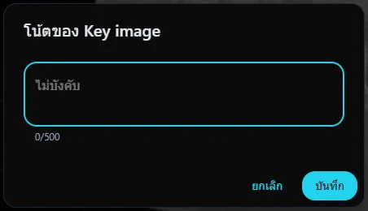
ปักได้เฉพาะภาพ 2D (ไม่ใช่ MPR/3D — ขึ้น “ปัก key image ได้เฉพาะภาพ 2D”) และไม่ได้กับภาพที่ server ย่อให้บนมือถือ · key image บันทึกบนเซิร์ฟเวอร์ ผู้ใช้อื่นเห็นได้ (ป้ายสีฟ้า) · พิมพ์เฉพาะ key image ได้จากหน้าต่าง Print · เปิดจาก HIS ปักได้แต่ไม่ถูกบันทึก
Copy image
คัดลอกภาพที่เห็น (รวมค่าวัดและ overlay) ลง clipboard เพื่อวางในเอกสารหรือแชท — ขึ้น “คัดลอกภาพแล้ว” · ถ้าเว็บไม่ใช่ https ระบบดาวน์โหลดเป็นไฟล์ PNG แทน (“บันทึกภาพเป็นไฟล์ PNG แล้ว …”) · มีในเมนูคลิกขวาด้วย
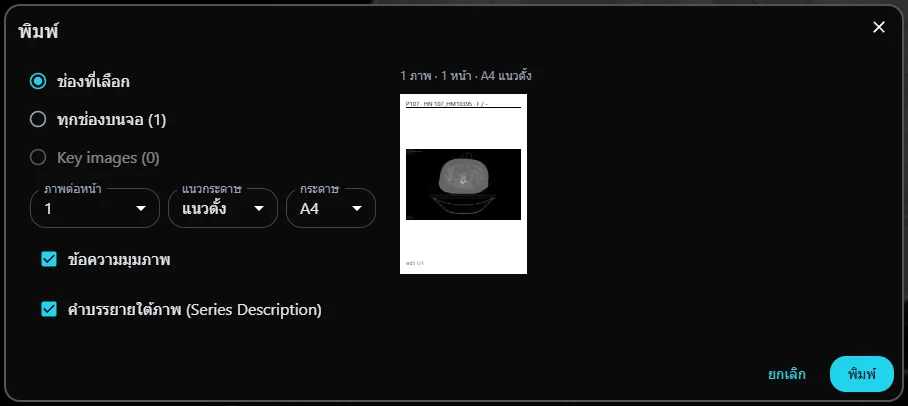
| ตัวเลือก | ค่า |
|---|---|
| ขอบเขต | ช่องที่เลือก / ทุกช่องบนจอ (n) / Key images (n) |
| ภาพต่อหน้า | ตามจอ (R×C) หรือ 1 · 2 · 4 · 6 · 8 · 9 · 12 |
| แนวกระดาษ · กระดาษ | แนวตั้ง / แนวนอน · A4 / Letter |
| ข้อความมุมภาพ · คำบรรยายใต้ภาพ | แสดงข้อมูลมุมภาพ และ Series Description ใต้ภาพ |
กด พิมพ์ แล้วเลือกเครื่องพิมพ์หรือ “บันทึกเป็น PDF” · ท้ายกระดาษระบุ “พิมพ์โดย ‹ชื่อผู้ใช้› เมื่อ ‹วันเวลา›” และ “สำหรับอ้างอิง ไม่ใช่เพื่อการวินิจฉัย” · ภาพเล็กจนไม่คมจะเตือน “ภาพจะพิมพ์ที่ประมาณ … dpi” — ดับเบิลคลิกขยายช่องก่อนพิมพ์ หรือลดภาพต่อหน้า · ECG พิมพ์ขนาดจริงได้ (ตั้ง Scale 100% ไม่เลือก Fit to page ในกล่องพิมพ์ของเบราว์เซอร์) · Key image ที่เตรียมไม่ได้จะถูกข้าม · ทุกครั้งที่พิมพ์ระบบบันทึก audit · ไม่มีบนมือถือ
DICOM Tags
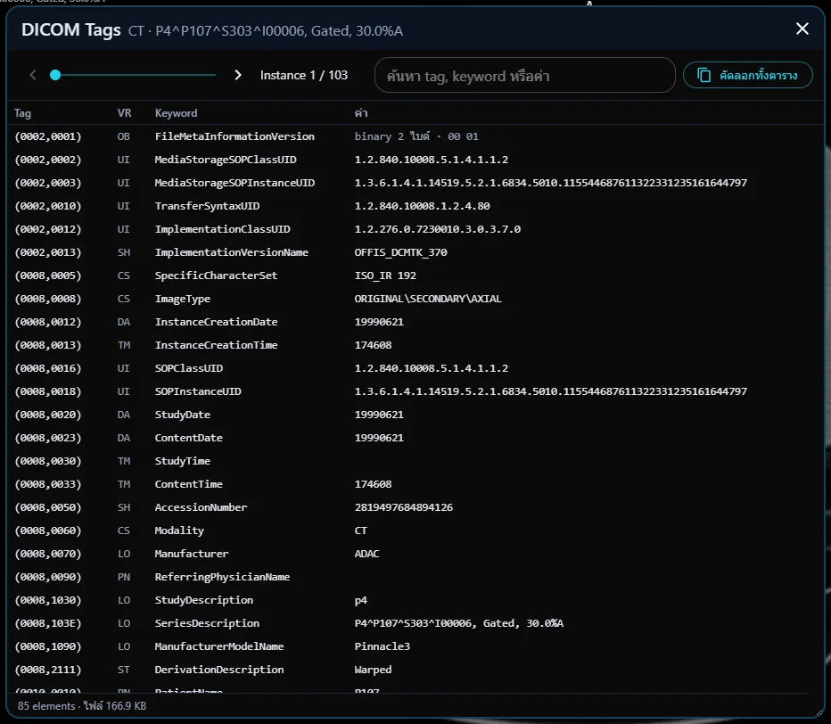
- แสดงทุก tag ของภาพ: Tag, VR, Keyword, ค่า · เลื่อนแถบด้านบนเพื่อดู instance อื่นใน series
- ช่องค้นหา tag / keyword / ค่า · คลิกเพื่อเปิด sequence (ทีละชั้น หน้าละ 50 item) · ชี้แถวเพื่อ “คัดลอกค่า” · ปุ่ม คัดลอกทั้งตาราง · หัวหน้าต่างบอกจำนวน element และขนาดไฟล์ · หน้าต่างลอย ลากย้าย/ย่อขยายได้ และใช้ Viewer ต่อได้ขณะเปิด · เปิดจากเมนูคลิกขวาได้ด้วย
Calibrate
- วาดเส้น Length บนวัตถุที่รู้ขนาดจริง (เลือกเส้นนั้น)
- กด Calibrate แล้วกรอก “ความยาวจริง (mm)” กด ตั้งค่า
- ระบบแจ้ง “Calibrate แล้ว: เส้นนี้ = X mm” และภาพมีป้าย “ผู้ใช้ Calibrate เอง”
ใช้กับภาพ 2D เท่านั้น มีผลเฉพาะครั้งนี้ — เหมาะกับภาพที่ไม่มีข้อมูลขนาดพิกเซล · ภาพที่มี PixelSpacing จาก DICOM หรือ US Region อยู่แล้วจะไม่ให้ทับ (“ภาพนี้มี PixelSpacing จาก DICOM อยู่แล้ว — ไม่ต้อง calibrate”) · ยังไม่ได้วาดเส้นจะขึ้น “วาดเส้น Length บนวัตถุที่รู้ขนาดจริงในภาพนี้ก่อน”
Layout (workspace / hanging protocol)
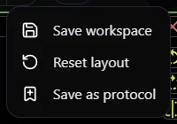
| รายการ | หน้าที่ |
|---|---|
| Save workspace | บันทึกหน้าจอนี้ (template, ผัง, series และภาพในแต่ละช่อง) ไว้เปิดการตรวจนี้ครั้งหน้า — ไม่เก็บ W/L, zoom, Fusion, SEG/RT, phase · ยังไม่มีภาพในช่องใดขึ้น “ยังไม่มีภาพในช่องไหนเลย — ไม่มีอะไรให้บันทึก” · เปิดจาก HIS บันทึกไม่ได้ |
| Reset layout | ลบ workspace แล้วจัดหน้าจอใหม่ตามกฎ |
| Save as protocol | สร้าง hanging protocol จากหน้าจอนี้ ใช้กับการตรวจลักษณะเดียวกันครั้งต่อไป — เปิดฟอร์มกฎที่เติมเงื่อนไขจากหน้าจอให้แล้ว (description ครอบด้วย ^…$ ให้ตรงเป๊ะ ลบออกได้ถ้าอยากให้กว้างขึ้น) กด บันทึก = บันทึกขึ้นเซิร์ฟเวอร์ทันที กฎใหม่อยู่บนสุด (สูงสุด 30 กฎ) — ดู Hanging protocol |
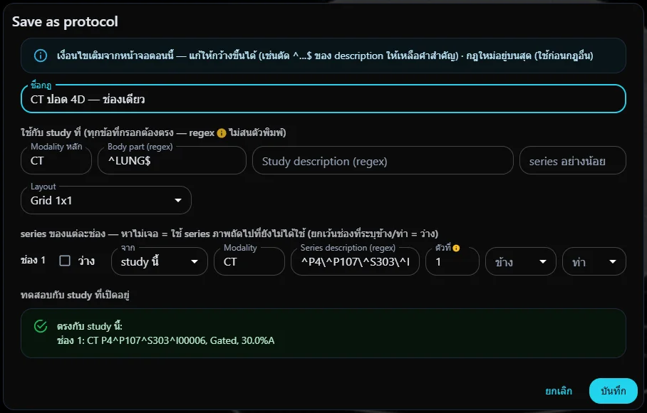
ซ่อน Save workspace / Reset layout / Save as protocol ครบทั้ง 3 ตัวใน Settings › Toolbar = ปุ่ม Layout หายจาก toolbar
โหมดดูภาพขั้นสูง
MPR · Crosshair · Slab
ดูภาพตัดสามระนาบ (axial / coronal / sagittal) จาก series CT/MR เดียว หมุนระนาบเอียง และทำภาพฉายแบบหนา (MIP / MinIP / AIP)
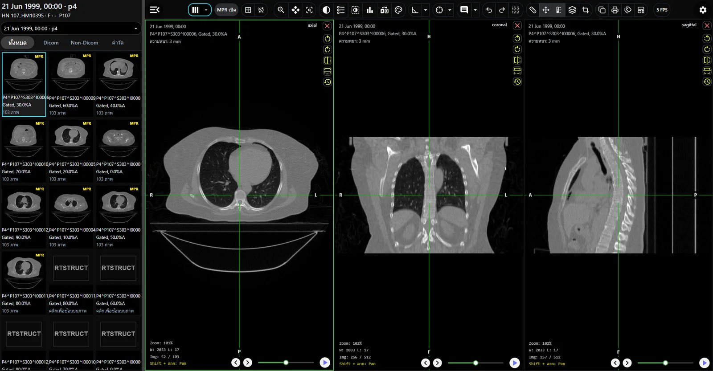
เปิดภาพ MPR
- เลือก Template MPR (หรือ Axial / Coronal / Sagittal primary) จาก toolbar — ระบบเลือก series ที่เหมาะสมให้
- หรือคลิก series ที่มีป้าย MPR ขณะอยู่ในผัง MPR เพื่อสร้างผังใหม่จาก series นั้น
- ตั้งให้ CT/MR เปิดเป็น MPR อัตโนมัติได้ที่ Settings › Layout
- ป้าย MPR บนภาพย่อแสดงเมื่อ series เป็น CT/MR ตั้งแต่ 40 ภาพ และระบบตรวจแล้วว่าภาพเรียงเป็น volume ได้
- series ที่ทำไม่ได้จะขึ้น “Series นี้ทำ MPR / 3D ไม่ได้” แล้วกลับไปใช้ผัง Default
- ป้ายระนาบ (axial / coronal / sagittal) อยู่มุมขวาบนของแต่ละช่อง · ทุกช่องระนาบมีแถบเลื่อนภาพ
Crosshair และระนาบเอียง (Oblique)
- ปุ่ม MPR เปิด / MPR ปิด บน toolbar เปิด/ปิด crosshair (ผัง MPR เปิดให้เองตอนจัดผัง · ปิดเองเมื่อช่องระนาบเหลือน้อยกว่า 3 ช่อง · ผัง Fusion ไม่มี crosshair แต่ Fusion MPR มี)
- เมื่อเปิด: ปุ่มซ้าย = ย้ายจุดตัด, Shift + ลากซ้าย = W/L
- ชี้ที่เส้น crosshair จะเห็นจุดจับ 2 แบบ: วงกลม = หมุนระนาบ (oblique) · สี่เหลี่ยม = ปรับความหนา slab
- ระนาบที่หมุนเอียงแล้วจะมีปุ่ม Reset oblique ใต้ปุ่มรีเซ็ตมุมมอง — ปรับทุกระนาบกลับตั้งฉาก (คงซูม ตำแหน่ง และ slab)
- ต้องมีภาพ 2D อย่างน้อย 3 ช่อง มิฉะนั้นขึ้น “Crosshair ต้องมีภาพ 2D อย่างน้อย 3 ช่อง”
Slab — MIP / MinIP / AIP
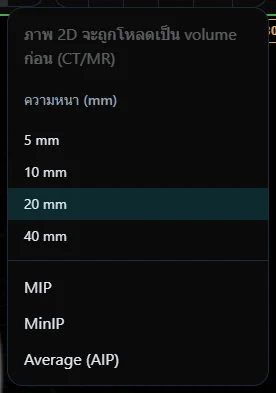
- เลือกความหนา 5 / 10 / 20 / 40 mm และโหมด Normal, MIP (ค่าสูงสุด — หลอดเลือด ก้อนในปอด), MinIP (ค่าต่ำสุด — ทางเดินหายใจ), Average (AIP)
- ลากจุดจับสี่เหลี่ยมบนเส้น crosshair ปรับความหนาได้ละเอียดโดยคงโหมดที่เลือก · ช่องที่ยัง Normal เมนูจะเสนอ 20 mm
- ใช้กับช่อง MPR และภาพ 2D CT/MR ได้ (ภาพ 2D จะถูกโหลดเป็น volume ก่อน — “ภาพ 2D จะถูกโหลดเป็น volume ก่อน (CT/MR)”)
- ช่อง Fusion ใช้ Slab ไม่ได้ · series ที่ภาพไม่ครบชุดหรือระยะห่างไม่เท่ากันจะขึ้น “Series นี้โหลดเป็น volume ไม่ได้ … ใช้ Slab ไม่ได้”
- กด รีเซ็ตมุมมอง เพื่อกลับเป็น Normal
โหมดดูภาพขั้นสูง
3D Volume Rendering
แสดงภาพ 3 มิติจาก series CT / MR / PET พร้อม preset ตามงานตรวจ ปรับคุณภาพและแสง และตัดก้อน 3D
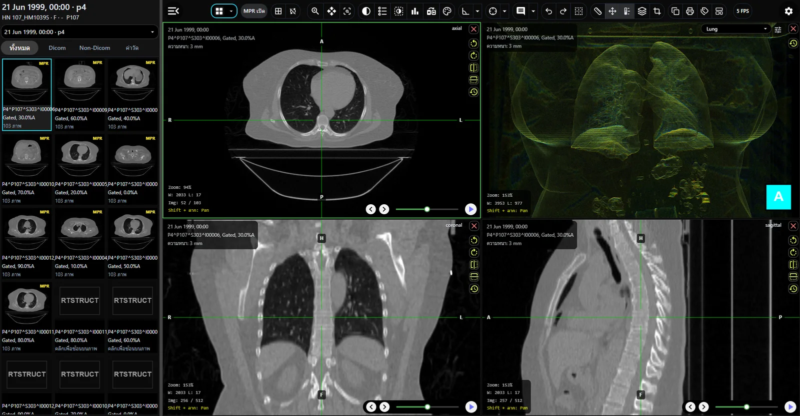
เปิดภาพ 3D
- เลือก Template 3D four up / 3D main / 3D primary / 3D only
- หรือในผังธรรมดา เปลี่ยนตัวเลือก 2D ▾ บนช่องเป็น 3D (CT/MR/PT/NM ที่มีมากกว่า 19 ภาพ) — ทำไม่ได้จะขึ้น “Series นี้ทำ 3D ไม่ได้”
- เมาส์ในช่อง 3D: ซ้าย = หมุน · Shift+ซ้าย = Pan · ขวา = W/L · ล้อ = Zoom
Preset ตามงานตรวจ
ช่อง 3D มีตัวเลือก preset (กลุ่ม BONE / CARDIO VASCULAR / CHEST SOFT TISSUE / MRI SPECIAL) ระบบเลือกค่าเริ่มต้นจากคำสำคัญในคำอธิบาย series และส่วนของร่างกาย (BodyPartExamined) ตามลำดับนี้
| การตรวจ | Preset เริ่มต้น |
|---|---|
| CTA ที่มีคำว่า aorta / AAA / iliac | CT-AAA |
| CTPA / pulmonary | CT-Pulmonary-Arteries |
| CT coronary / cardiac / heart | CT-Coronary-Arteries |
| CTA อื่น ๆ (vessel, run-off, circle of Willis) | CT-Chest-Vessels (CTA แขนขาที่มีคำกระดูก = CT-Bone) |
| CT กระดูก ข้อ ศีรษะ (ไม่รวมคอ), Pelvis non-contrast | CT-Bone |
| CT ปอด / HRCT | CT-Lung · ทางเดินหายใจ (airway, trachea) = CT-Air |
| CT ช่องท้อง เชิงกราน คอ อวัยวะภายใน | CT-Soft-Tissue · มีคำว่า liver / portal / venous = CT-Liver-Vasculature |
| CT ทรวงอกฉีดสี · CT อื่น ๆ | CT-Chest-Contrast-Enhanced · CT-Soft-Tissue |
| MR angio / MRA / MRV / TOF / ฉีด Gadolinium | MR-Angio (มีคำว่า MIP = MR-MIP) |
| MR DTI / DWI / ADC / diffusion | DTI-FA-Brain |
| MR T2 / FLAIR / brain / head · MR อื่น ๆ | MR-T2-Brain · MR-Default |
| PET และ modality อื่น | CT-Soft-Tissue |
คุณภาพและแสงของภาพ 3D
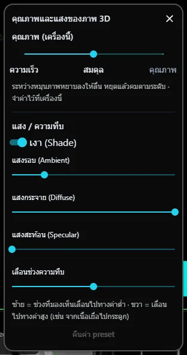
- ปุ่ม บนช่อง 3D เปิดแผงปรับ: คุณภาพ (เครื่องนี้) 5 ระดับ จาก ความเร็ว ถึง คุณภาพ (ค่าเริ่มต้น สมดุล · มีผลเมื่อปล่อยเมาส์ · ระหว่างหมุนภาพจะหยาบลงชั่วคราวให้ลื่น · จำค่าต่อคอมพิวเตอร์ ไม่ตามบัญชี)
- แสง / ความทึบ: เงา (Shade), แสงรอบ (Ambient), แสงกระจาย (Diffuse), แสงสะท้อน (Specular) และ “เลื่อนช่วงความทึบ”
- ปุ่ม “คืนค่า preset” คืนแสง/ความทึบของ preset · เพิ่มคุณภาพแล้วระบบอาจโหลดภาพเพิ่ม (“กำลังโหลดภาพ 3D ใหม่ให้ครบขึ้นตามระดับคุณภาพ”) · แผงไม่ปิดเอง ปิดด้วย × · ค่าแสงที่ปรับติดไปด้วยเมื่อเปลี่ยน preset
Volume crop
- กด Volume crop (หมวด View) — ต้องมีช่อง 3D (3D four up / 3D main / 3D primary / 3D only)
- ลากลูกกลมในช่อง 3D หรือเส้นขอบสีในช่อง MPR เพื่อตัด · ลากที่อื่น = หมุนภาพ · Ctrl+ลาก = หมุนกล่อง · Shift+ลาก = เลื่อนภาพ
- กล่องบางสุด 20 mm · ปิดปุ่ม = เลิกตัด (ระบบจำกล่องไว้)
Orientation cube แสดงทิศในช่อง 3D (เปิดเป็นค่าเริ่มต้น)
โหมดดูภาพขั้นสูง
PET/CT — SUV และ Fusion
ค่า SUV บนภาพ PET การซ้อนภาพ PET บน CT (Fusion) ภาพ MIP และการวัดปริมาตรก้อนด้วย PET VOI
ค่า SUV บนช่อง PET
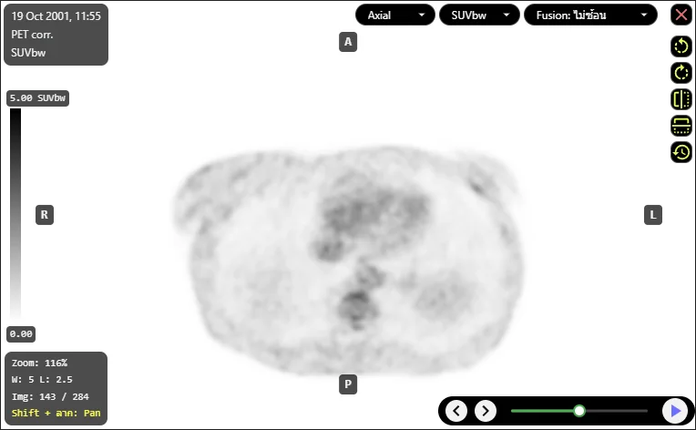
- บรรทัดใต้ชื่อ series แสดงชนิด SUV ที่ใช้: SUVbw / SUVlbm / SUVbsa — เลือกได้ที่ตัวเลือกชนิด SUV บนช่อง (ชนิดที่คิดไม่ได้จะเลือกไม่ได้ พร้อมเหตุผล)
- ถ้าคิด SUV ไม่ได้ จะแสดงหน่วย Bq/ml พร้อมเหตุผล เช่น “ไม่มีน้ำหนักผู้ป่วย (PatientWeight)”
- ค่าเริ่มต้นของช่อง PET คือ SUV 0–5 แบบกลับสี (พื้นขาว จุดจับสารเข้ม) · ชนิด SUV เริ่มต้นตั้งที่ Settings › Annotation (เปลี่ยนบนช่องมีผลเฉพาะครั้งนี้) · ค่า ROI บนช่อง PET และแท็บค่าวัดแสดงเป็นชนิด SUV ที่เลือก
Fusion — ซ้อน PET บน CT
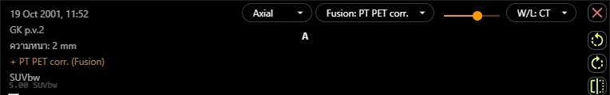
| Template | ผัง |
|---|---|
| Fusion | CT | PT / Fusion | PT MIP |
| Fusion MPR | Fusion ทั้ง axial / coronal / sagittal + MIP พร้อม crosshair |
| Fusion prior | Fusion ครั้งนี้ | ครั้งก่อน / MIP | MIP (ต้องมี PET/CT ครั้งก่อน) |
- ช่อง CT ที่มี PET คู่กัน เลือก “Fusion: PT …” เพื่อซ้อน หรือ “Fusion: ไม่ซ้อน”
- ชั้น PET แสดงด้วยสี Hot iron · แถบเลื่อนสีส้ม = ความทึบของชั้น PET (ค่าเริ่มต้น 60%) · ตัวเลือก W/L: CT / W/L: PT = ชั้นที่การลาก W/L และตัวเลข W/L มุมล่างอ้างถึง · ช่อง PET ในกลุ่ม sync เลื่อนตามตำแหน่งจริงของ CT (ไม่ใช่สัดส่วน)
- ชี้เมาส์บนช่อง Fusion เพื่อดูค่า
SUVbw x.xx · HU n· ตัวเลือกระนาบ Axial/Coronal/Sagittal เปลี่ยน 3 ช่องพร้อมกัน - สอง series ต้องอยู่ใน Frame of Reference เดียวกัน มิฉะนั้นขึ้น “ซ้อน Fusion ไม่ได้: …”
ภาพ MIP
ช่อง MIP มีป้าย MIP ⟳ — หมุนล้อเมาส์ = หมุนภาพ · คลิกบนภาพ = ช่องอื่นเลื่อนไปยังจุดที่จับสารสูงสุดตามแนวที่คลิก · ลากปุ่มขวา = W/L
PET VOI
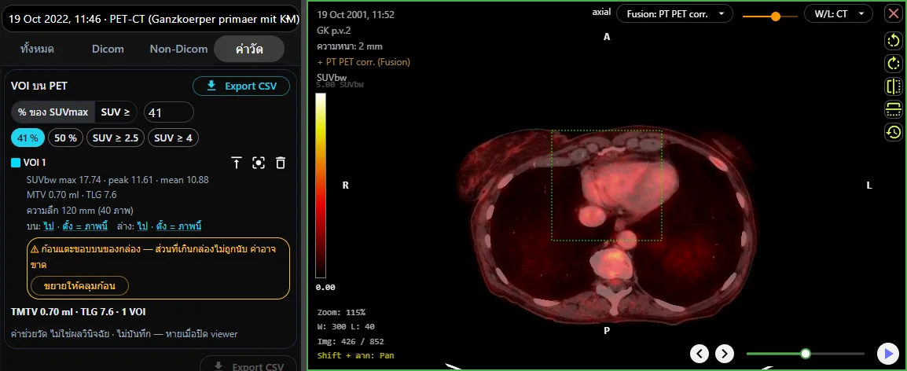
- เลือก PET VOI box หรือ PET VOI circle (หมวด ROI — แสดงเมื่อช่อง active มี PET แบบ volume: PET MPR / Fusion / Fusion MPR)
- ลากกรอบครอบก้อนบนช่อง PET — ระบบเลือก voxel ในกรอบที่ผ่านเกณฑ์ (ค่าเริ่มต้น 41% ของ SUVmax ในกรอบ ตามแนวทาง EANM) แล้วระบายสีบนทุกช่องที่แสดง PET นั้น (ไม่รวม MIP)
- แผง VOI บน PET บนสุดของแท็บค่าวัด: เกณฑ์เลือก voxel ใช้ร่วมกันทุก VOI (% ของ SUVmax หรือ SUV ≥ ค่าคงที่ — เปลี่ยนแล้วคิดใหม่ทั้งชุด) · ต่อ VOI แสดง SUVmax / SUVpeak (ทรงกลม 1 cm³ แบบ PERCIST) / SUVmean, MTV (ml), TLG และความลึก “n mm (n ภาพ)” · แถวรวม TMTV / TLG
- ปุ่มในแต่ละ VOI: คลิกชื่อเพื่อแก้ · ⌖ ไปจุด SUVmax / SUVpeak · ขอบบน-ล่าง “ไป” (ดูภาพที่เป็นขอบกล่อง) และ “ตั้ง = ภาพนี้” (ใช้ภาพที่ช่อง PET แสดงอยู่เป็นขอบ) · ลบ · Export CSV ของ VOI ทุกตัว (ไฟล์
pet-voi_‹accession›_‹เวลา›.csvไม่มีชื่อผู้ป่วย)
- ก้อนชนขอบกล่องจะเตือน “⚠ ก้อนแตะขอบ … — ดูแผง VOI” — กด ขยายให้คลุมก้อน (ขยายความลึกทีละภาพด้านที่ชน สูงสุด 10 cm ต่อด้าน) หรือลากมุมกรอบให้กว้างขึ้น · ขยายถึงเพดานแล้วยังชน = อาจรวมอวัยวะที่ร้อนต่อกัน ให้ตั้งขอบเอง
- voxel ที่เป็นของ VOI อื่นแล้วไม่นับซ้ำ (“n voxel เป็นของ VOI อื่น”) · ภาพ PET ในกรอบยังโหลดไม่ครบจะคิดใหม่เองเมื่อโหลดเสร็จ · PET ที่คิด SUV ไม่ได้ใช้ VOI ไม่ได้ · วาดบนช่องที่ไม่ใช่ PET volume ขึ้น “VOI ต้องวาดบนช่อง PET แบบ volume (PET MPR / Fusion)”
ค่า VOI เป็นค่าช่วยวัด ไม่ใช่ผลวินิจฉัย และไม่ถูกบันทึก — หายเมื่อปิด viewer · ค่าวัดบนช่อง Fusion เป็น HU ของ CT · workspace ไม่บันทึกการซ้อน Fusion
โหมดดูภาพขั้นสูง
SEG และ RTSTRUCT
ซ้อนบริเวณที่ตัดไว้ (Segmentation) และโครงร่างอวัยวะจากแผนรังสีรักษา (RT Structure Set) บนภาพต้นทาง — อ่านอย่างเดียว
Segmentation (SEG)
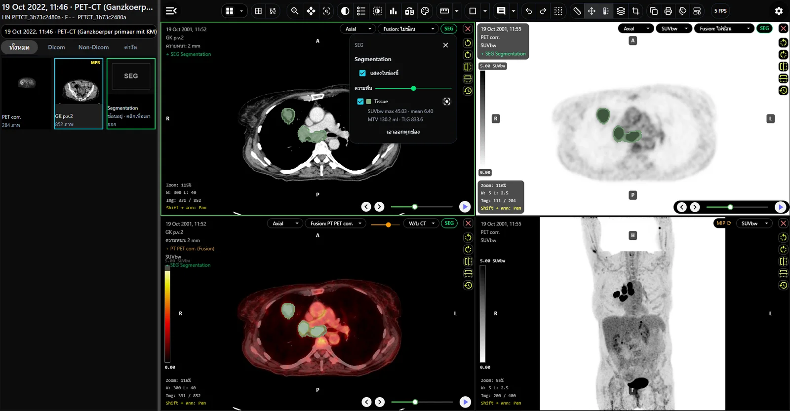
- คลิกหรือลากภาพย่อ SEG (“คลิกเพื่อซ้อนบนภาพ”) — ระบบซ้อนบนทุกช่องที่แสดง series ต้นทาง (ภาพย่อมีกรอบสีเขียว)
- กดป้าย SEG บนช่องเพื่อเปิดแผง: แสดงในช่องนี้ · ความทึบ · รายการ segment (ติ๊กเปิด/ปิด, สี, ชื่อ)
- กด “ไปตำแหน่งค่าสูงสุด” เพื่อกระโดดไปยังบริเวณนั้น · ดูสถิติ SUVmax / SUVmean / MTV / TLG หรือ HU และปริมาตร
- คลิกภาพย่ออีกครั้ง หรือกด “เอาออกทุกช่อง” เพื่อเลิกซ้อน
- ต้องเปิด series ต้นทางก่อน (“เปิด Series … ก่อน แล้วคลิก SEG อีกครั้ง”) · SEG ที่ว่างทุกภาพจะขึ้น “ไม่มีบริเวณที่ตัดไว้”
- ไม่ซ้อนบนช่อง MIP / 3D · SEG บางชนิดยังไม่รองรับ (ระนาบตั้งฉากหรือเอียงจากภาพต้นทาง, RLE แบบ 1 bit, การบีบอัดบางแบบ, SEG ที่ไม่ระบุ series ต้นทาง, ขนาดภาพไม่ตรง) — การ์ดขึ้น “แสดงไม่ได้ · คลิกเพื่อลองใหม่” พร้อมเหตุผล · สถิติที่ภาพต้นทางยังโหลดไม่ครบขึ้น “สถิติ: รอภาพต้นทางโหลดอีก n ภาพ — เปิดแผงใหม่อีกครั้ง”
RT Structure Set (RTSTRUCT)
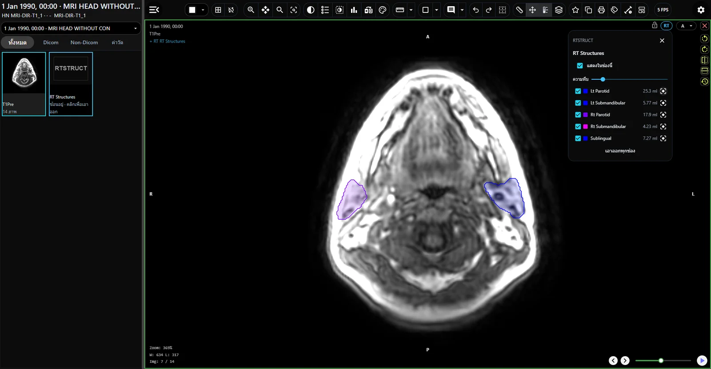
- คลิกภาพย่อ RTSTRUCT เพื่อซ้อน · กดป้าย RT บนช่องเพื่อเปิดแผง: แสดงในช่องนี้ · ความทึบ · รายการ ROI (ติ๊ก, สี, ชื่อ, ปริมาตร ml) · ไปที่ ROI
- RTSTRUCT แสดงเฉพาะระนาบเดียวกับ contour (ไม่ฉายลงระนาบอื่นใน MPR) และย้ายตาม phase ของภาพ 4D
- ถ้ายังไม่ได้เปิดภาพต้นทาง ระบบแนะนำให้ “ลาก Series … ลงช่องเพื่อดู RTSTRUCT”
SEG และ RTSTRUCT ยังไม่รองรับบนมือถือ/แท็บเล็ต · RT Plan, Registration และ Presentation State แสดงว่า “ยังไม่รองรับการแสดง”
โหมดดูภาพขั้นสูง
4D / Phase / Cine
ภาพหลายช่วงเวลา (เช่น 4D CT ปอดตามการหายใจ, MR dynamic, cardiac cine) — เลือก phase เล่นวนตาม phase และเล่น cine
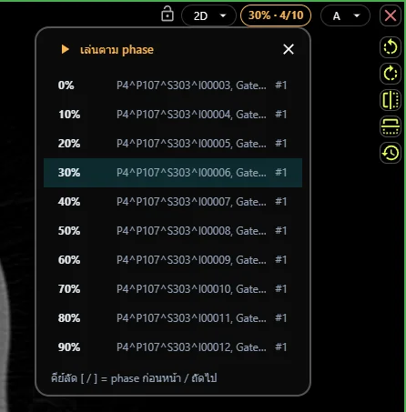
เลือกและเล่น Phase
- เมื่อเปิด series ที่มีหลาย phase จะมีป้าย 30% · 4/10 บนช่อง (หรือ “Phase 3/6”)
- คลิกป้ายเพื่อเปิดแผง — เลือก phase จากรายการ หรือกด “เล่นตาม phase” เพื่อเล่นวนทุก phase
- คีย์ลัด [ / ] = phase ก่อนหน้า / ถัดไป (เฉพาะช่อง 2D ที่มีป้าย Phase) · ปิดแผงด้วย ×, กดป้ายซ้ำ, Esc หรือคลิกนอกแผง (ยังเลื่อนภาพหรือลากในช่องได้ขณะแผงเปิด)
- เปลี่ยน phase แล้วยังคงตำแหน่งภาพ ซูม และ W/L เดิม · เมื่อเปิด Sync ช่องในกลุ่มเดียวกันเปลี่ยน phase ไปพร้อมกัน
- รองรับทั้งแบบ series ละ phase, ทุก phase ใน series เดียว (ภาพย่อแสดง “N ภาพ × M phase”) และ Enhanced MR/CT
- ยังไม่มีบนช่อง MPR / volume และมือถือ · ไม่มีกราฟ time-intensity
Cine
- กด ที่แถบเลื่อนภาพมุมขวาล่างเพื่อเล่นภาพต่อเนื่อง · หยุด
- ความเร็วปรับที่ 5 FPS บน toolbar · ค่าเริ่มต้น การวนเล่น (Auto Re-Play) และ Yoyo (1 → N → 1) ตั้งที่ Settings › Layout
โหมดดูภาพขั้นสูง
Multi-frame · ECG · Video · รายงาน
ภาพเคลื่อนไหวหลายเฟรม (US / XA) และ overlay, คลื่นไฟฟ้าหัวใจ, วิดีโอ DICOM, รายงาน PDF / SR และภาพ Secondary Capture
ภาพ Multi-frame และ Overlay
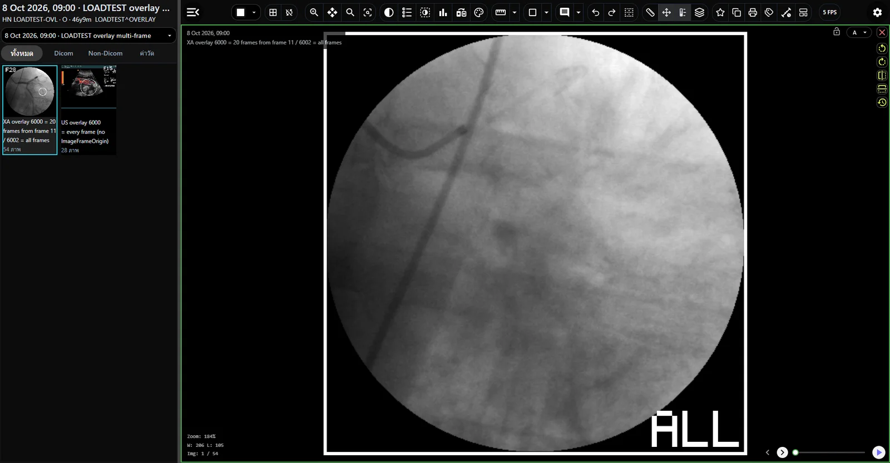
- ภาพ US / XA ที่มีหลายเฟรมในไฟล์เดียวจะโหลดทั้งไฟล์ครั้งเดียว — แถบโหลดแสดง “กำลังโหลดไฟล์ …% (… MB)”
- เลื่อนเฟรมด้วยล้อเมาส์ / แถบเลื่อน หรือกด เล่น (ไม่เล่นอัตโนมัติ)
- Overlay ในไฟล์ DICOM (กราฟิกหรือข้อความที่เครื่องตรวจฝังมา) แสดงเสมอ ตามเฟรม และติดไปกับ Copy image / Print
- ภาพ US ที่มี US Region วัด Length ได้เลย · วัดในกรอบ Doppler/M-mode ใช้ US Directional
ECG Waveform
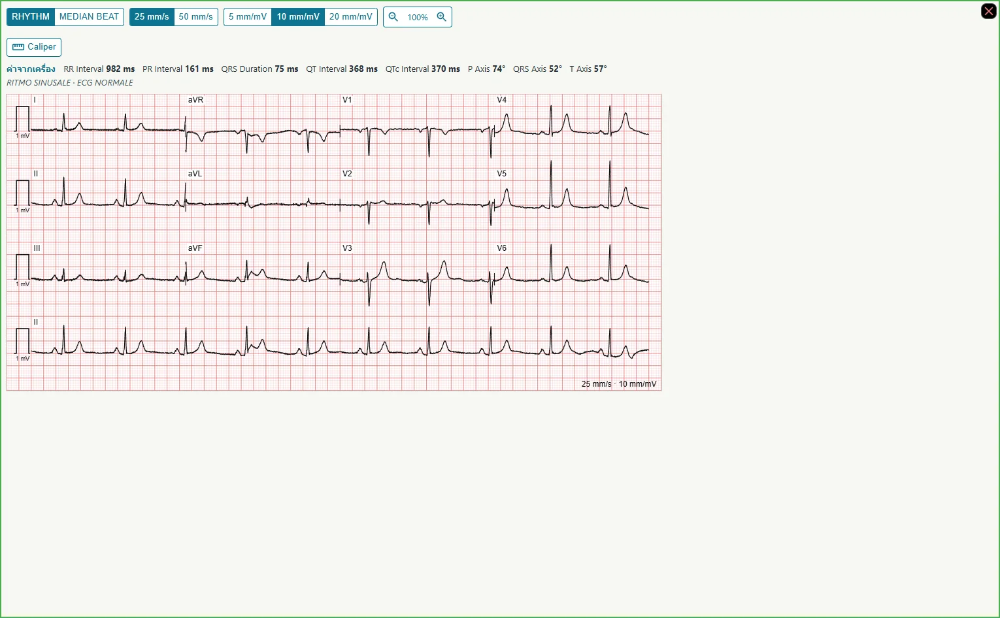
| ตัวควบคุม | ค่า |
|---|---|
| กลุ่ม | เช่น RHYTHM / MEDIAN BEAT (เมื่อไฟล์มีหลายกลุ่ม) |
| ความเร็วกระดาษ | 25 mm/s · 50 mm/s |
| ความสูงต่อ mV | 5 · 10 · 20 mm/mV |
| ซูม | ย่อ / 100% / ขยาย (0.5–4 เท่า) |
| Caliper | เลือก “ชนิด caliper”: ช่วงเวลา (ลากได้ทั้งแกนเวลาและ mV — แสดง ms, mV และอัตราหัวใจ) หรือ QTc (ลาก QT ตั้งแต่ต้น Q ถึงจบ T แล้วลาก RR จาก R ถึง R ถัดไป) · ลากปุ่มกลางหรือ 2 นิ้วเลื่อนแผ่น · Esc / Delete ลบตัวที่เลือก · ปุ่ม “ล้าง caliper” · สลับกลุ่มแล้ว caliper ถูกล้าง |
- แถบ QTc แสดง Bazett / Fridericia จากช่วง RR และ QT ที่วัด · แผง “ค่าจากเครื่อง” แสดงค่าที่เครื่อง ECG คำนวณมา (ถ้ามี)
- ครบ 12 lead และยาว ≥ 5 วินาที แสดงผัง 3×4 + แถบ lead II · caliper ไม่ถูกบันทึก · พิมพ์ขนาดจริงได้
วิดีโอ DICOM
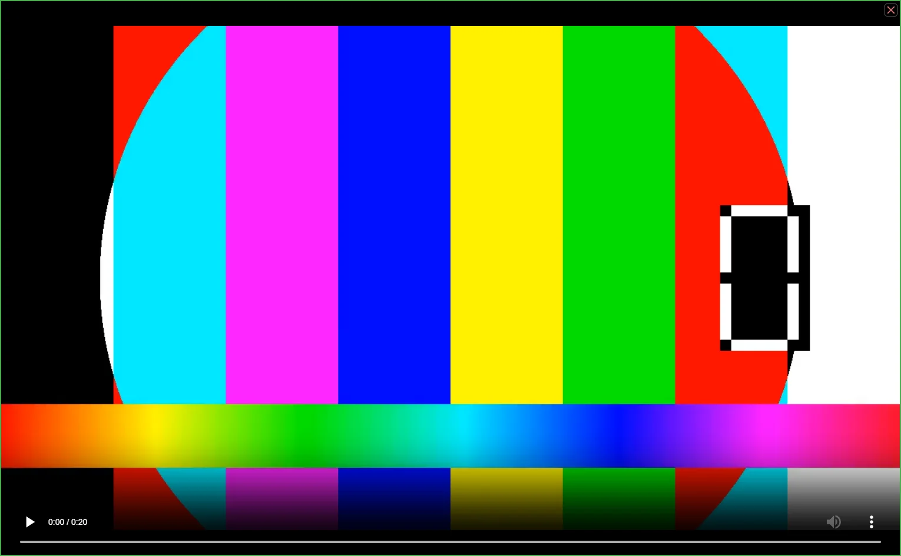
- ภาพย่อวิดีโอมีไอคอนฟิล์มและความยาว mm:ss · ครั้งแรกระบบอาจต้องเตรียมไฟล์ (“กำลังเตรียมวิดีโอ…” → “กำลังเตรียมวิดีโอ 40%”) Viewer ถามสถานะทุก 2 วินาทีแล้วเล่นได้เอง · ไฟล์ที่เตรียมไว้อ่านไม่ได้ เซิร์ฟเวอร์จะเตรียมใหม่ให้เอง
- ใช้ปุ่มเล่น กรอ ปรับเสียงของเบราว์เซอร์ · ดับเบิลคลิก = ขยายช่อง
- เตรียมไม่สำเร็จ: ขึ้น “เตรียมวิดีโอไม่สำเร็จ” พร้อมปุ่ม “ดาวน์โหลดไฟล์ต้นฉบับ (DICOM)”
รายงาน PDF · SR · Secondary Capture
- รายงาน PDF (การ์ด “รายงาน PDF 1 ฉบับ”): แสดงในช่อง มีปุ่มหน้าก่อน/ถัดไป ย่อ/ขยาย และตัวเลือก ขนาดจริง / พอดีหน้า / พอดีความกว้าง / 50–200%
- การตรวจที่มีรายงานและมีหลาย series จะเปิดเป็น 1x2 (ภาพ | รายงาน) อัตโนมัติ
- Structured Report (การ์ด “รายงาน SR 1 ฉบับ”): แสดงเป็นโครงสร้างหัวข้อ · รายงานปริมาณรังสี (Dose Report) แสดงการ์ดสรุป DAP รวม, Dose (RP) รวม, เวลา Fluoro และตาราง event
- Secondary Capture: แสดงเป็นภาพปกติ — ภาพที่ไม่มีข้อมูล Study/Series จะวัดได้แต่ไม่บันทึก และปัก key image ไม่ได้
โหมดดูภาพขั้นสูง
Compare · Mammo · Hanging
เทียบกับการตรวจครั้งก่อน การจัดภาพ Mammography และการจัดผังหน้าจออัตโนมัติด้วย workspace / hanging protocol
เทียบกับการตรวจครั้งก่อน
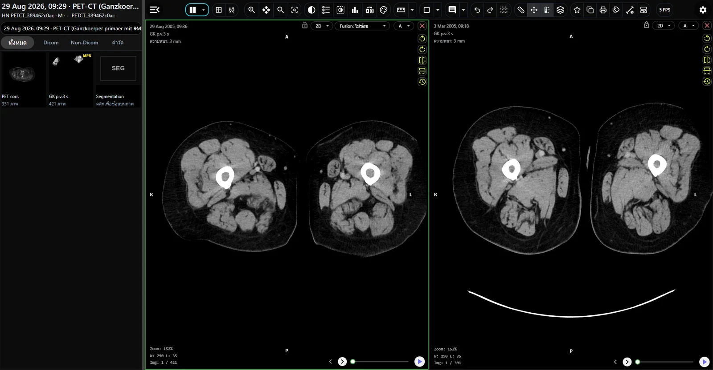
- เลือก Template Compare 1x2 หรือ Compare 2x1 — ระบบเลือก series ที่ตรงกันจากการตรวจครั้งก่อน (modality ต้องตรง แล้วให้คะแนนจากความคล้ายของคำอธิบาย ส่วนของร่างกาย ความใหม่ และจำนวนภาพ) ให้ช่องที่ 2 และเปิด sync กลุ่ม A · series ที่คลิกล่าสุดคือ “series หลัก” ที่ใช้หาคู่
- คลิก series ในแถบข้างเพื่อเปลี่ยนภาพเทียบ · หาไม่เจอจะขึ้น “ไม่พบ Series ที่ตรงกันใน Study ก่อนหน้า — ลากเลือกเอง”
- ไม่มีการตรวจครั้งก่อน: “ไม่มี Study ก่อนหน้าให้เทียบ” · เปิดการตรวจอื่นทั้งการตรวจได้จาก ช่องประวัติการตรวจ
Mammography
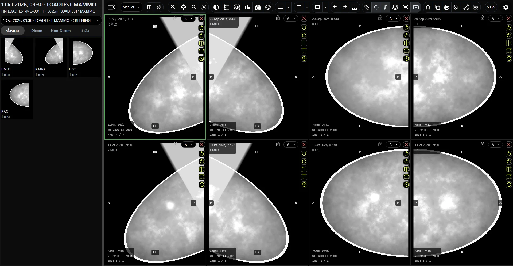
- การตรวจ MG ที่มีภาพมาตรฐานตั้งแต่ 2 ภาพ ระบบจัดเป็น 1x4
RMLO | LMLO | RCC | LCC(มีครั้งก่อนที่มีภาพ MG ≥ 2 = 2x4 แถวบนเป็นครั้งก่อน) · ท่าที่ไม่มีภาพ = ช่องว่าง (ไม่ใช้ series อื่นแทน) - ข้างและท่าอ่านจาก tag ImageLaterality / ViewPosition ถ้าเครื่องไม่ใส่จะเดาจากชื่อ series (เช่น “R CC”, “LMLO”, “RIGHT MLO”) · CAD, PDF และ SR ของการตรวจไม่ถูกจัดเข้าช่อง
- เมื่อภาพโหลดครบ ระบบจัดกล้อง: ภาพข้าง R ผนังอกชิดขอบขวาของช่อง ข้าง L ชิดขอบซ้าย (คู่ R | L หันหลังชนกัน) · CC กึ่งกลางแนวตั้ง MLO ชิดบน · ทุกช่องสเกลเดียวกัน (mm ต่อพิกเซลเท่ากัน — เทียบขนาด 2 ข้าง/ปีก่อนได้ตรง) · ภาพกลับหัวหรือกลับด้านถูกพลิกให้ตาม PatientOrientation
- จัดเสร็จระบบเปิด Mammo lock ให้เอง — ซูม/เลื่อนช่องหนึ่ง ช่องอื่นตาม (R/L เลื่อนสวนกัน) · Sync ปกติไม่ใช้กับคู่ R/L
- Mammo fit = จัดภาพ MG ทุกช่องให้เข้าคู่อีกครั้ง (หลังซูมหรือเปลี่ยนขนาดหน้าต่าง) · Mammo lock = เปิด/ปิดการซูม/เลื่อนพร้อมกัน · รีเซ็ตมุมมองของช่อง = คืนภาพตามปกติ · ไม่จัดบนมือถือ/แท็บเล็ต
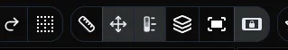
Workspace และ Hanging protocol
ตอนเปิดการตรวจ ระบบเลือกผังหน้าจอตามลำดับนี้:
- Workspace ที่คุณบันทึกไว้ของการตรวจนี้ ( Layout › Save workspace)
- Hanging protocol ของคุณ — กฎที่ตรงเงื่อนไข (modality, ส่วนของร่างกาย, คำอธิบาย) กฎแรกที่ตรงจะถูกใช้
- Template ตาม modality ที่ตั้งไว้ใน Settings › Layout
- กฎในตัวระบบ: Mammography, PET/CT Fusion, รายงาน (1x2) หรือ 1x1
- สร้าง hanging protocol จากหน้าจอปัจจุบัน: Layout › Save as protocol · แก้ไขกฎละเอียดที่ Settings › Hanging
- Reset layout = ลบ workspace ของการตรวจนี้แล้วจัดใหม่
- เปิดจาก HIS บันทึก workspace ไม่ได้ · workspace และ hanging protocol ใช้บน desktop เท่านั้น (มือถือ/แท็บเล็ตเปิด 1x1 series แรกเสมอ)
ตั้งค่า (Viewer Settings)
ภาพรวม Viewer Settings
ปรับ Viewer ให้เหมาะกับการทำงานของคุณ — ค่าที่บันทึกเก็บบนเซิร์ฟเวอร์ตามบัญชีผู้ใช้ เปิดจากคอมพิวเตอร์เครื่องไหนก็ได้ค่าเดิม (ยกเว้นคุณภาพภาพ 3D ที่จำต่อเครื่อง) · เก็บเฉพาะค่าที่ต่างจากค่าเริ่มต้น ค่าที่ไม่ได้แก้จะตาม Viewer รุ่นใหม่เอง
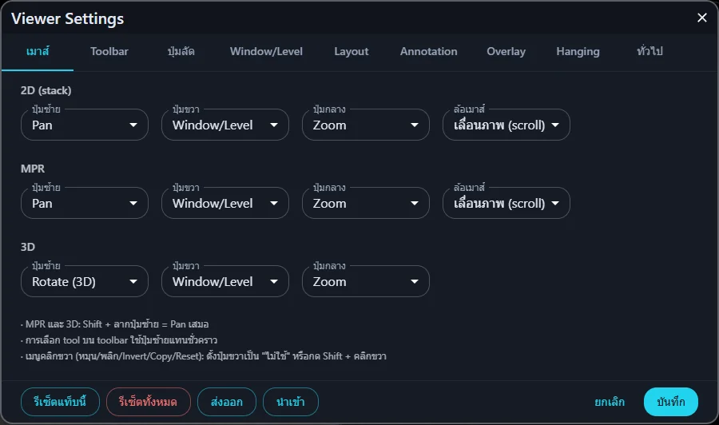
เปิดหน้าต่างตั้งค่า
- กด “ตั้งค่า Viewer” ที่ปลายขวาของ toolbar (ไม่มีบนมือถือ/แท็บเล็ต)
- มี 9 แท็บ: เมาส์ · Toolbar · ปุ่มลัด · Window/Level · Layout · Annotation · Overlay · Hanging · ทั่วไป
- การเปลี่ยนส่วนใหญ่แสดงผลทันทีเพื่อให้ลองดูก่อนบันทึก (เมาส์, toolbar, คีย์ลัด, W/L preset, Annotation, Overlay, Cine, ภาษา) · ส่วนที่มีผลครั้งถัดไปที่เปิดการตรวจ: Template ตาม modality, เปิดเป็น MPR อัตโนมัติ, Ref Line อัตโนมัติ, Sync ตอนเปิด, Orientation cube และกฎ Hanging
- ปิดหน้าต่างได้ด้วยปุ่ม บันทึก / ยกเลิก / เท่านั้น (Esc หรือคลิกนอกหน้าต่างไม่ปิด) · ขณะเปิดอยู่คีย์ลัดของ Viewer ไม่ทำงาน
ปุ่มท้ายหน้าต่าง
| ปุ่ม | หน้าที่ |
|---|---|
| บันทึก | บันทึกค่าทั้งหมดบนเซิร์ฟเวอร์แล้วปิดหน้าต่าง — ค่าที่ไม่ถูกต้องถูกจัดการให้เงียบ ๆ (preset ไม่มีชื่อถูกทิ้ง ชื่อยาวเกิน 40 ตัวถูกตัด W/L นอกช่วงถูกปรับ กฎ Hanging ที่ regex ผิดถูกทิ้ง) · บันทึกไม่สำเร็จ = หน้าต่างไม่ปิดและขึ้นข้อความสีแดง (ค่าทั้งหมดต้องไม่เกิน 32 KB) |
| ยกเลิก / | คืนค่าเดิมก่อนเปิดหน้าต่าง แล้วปิด |
| รีเซ็ตแท็บนี้ | คืนค่าเริ่มต้นของแท็บที่เปิดอยู่ (ยังไม่บันทึกจนกด บันทึก) — ระวัง: แท็บ Window/Level ลบ modality ที่เพิ่มเองเหลือชุด CT · แท็บ Hanging ลบกฎทุกตัว · แท็บ ทั่วไป คืนเฉพาะภาษา · ไม่แตะคุณภาพ 3D |
| รีเซ็ตทั้งหมด | ลบค่าที่บันทึกทั้งหมด (รวมกฎ Hanging และภาษา) กลับเป็นค่าเริ่มต้นทันที โดยไม่ถามยืนยัน แล้วปิดหน้าต่าง · ไม่ลบ workspace ค่าวัด key image และคุณภาพ 3D |
| ส่งออก | ดาวน์โหลดไฟล์ viewer-preferences.json (เฉพาะค่าที่ต่างจากค่าเริ่มต้น ตามที่แสดงในหน้าต่างขณะนั้นแม้ยังไม่บันทึก · ไม่รวมคุณภาพ 3D) — ใช้สำรองหรือแบ่งปันให้เพื่อนร่วมงาน · ผู้ใช้ HIS ส่งออกได้ |
| นำเข้า | เลือกไฟล์ .json ที่ส่งออกไว้ (ไม่เกิน 256 KB) — แทนที่ค่าทั้งหมด ไม่รวมกับค่าเดิม (ค่าที่ไม่มีในไฟล์กลับเป็นค่าเริ่มต้น รวมภาษาและกฎ Hanging — ส่งออกค่าของตัวเองเก็บไว้ก่อน) · แสดงผลให้ดูก่อน ขึ้น “นำเข้า ‹ไฟล์› แล้ว — กดบันทึกเพื่อเก็บค่า” ต้องกด บันทึก จึงเก็บ · ไฟล์ผิดขึ้น “ไฟล์นี้ไม่ใช่ค่าตั้งของ viewer หรือมาจาก viewer รุ่นใหม่กว่า” |
เปิด Viewer จาก HIS: ได้ค่าเริ่มต้นทุกครั้ง มีแถบแจ้ง “เปิดจาก HIS — บัญชีนี้ใช้ร่วมกันหลายคน ปรับค่าได้เฉพาะหน้าต่างนี้ แต่บันทึกไม่ได้” และปุ่ม บันทึก / รีเซ็ตทั้งหมด ถูกปิด · คุณภาพภาพ 3D (แท็บ Layout) จำค่าแยกต่อคอมพิวเตอร์และมีผลทันที ไม่ขึ้นกับปุ่ม บันทึก/ยกเลิก/ส่งออก/นำเข้า · มือถือ/แท็บเล็ตเปิดหน้าต่างนี้ไม่ได้ แต่ใช้ค่าที่บันทึกไว้ (รวมภาษา)
ตั้งค่า (Viewer Settings)
เมาส์ · Toolbar · ปุ่มลัด
กำหนดหน้าที่ของปุ่มเมาส์ การแสดงและลำดับเครื่องมือบน toolbar และคีย์ลัด
แท็บ เมาส์
กำหนดแยก 3 กลุ่ม: 2D (stack), MPR, 3D — แต่ละกลุ่มเลือกหน้าที่ของ ปุ่มซ้าย / ปุ่มขวา / ปุ่มกลาง และล้อเมาส์
- ตัวเลือกปุ่ม: Pan, Zoom, Window/Level, Rotate (3D — เฉพาะกลุ่ม 3D), — ไม่ใช้ — · ค่าเริ่มต้น 2D/MPR: ซ้าย Pan · ขวา Window/Level · กลาง Zoom · ล้อ เลื่อนภาพ (scroll) · 3D: ซ้าย Rotate (3D)
- ล้อเมาส์ (2D, MPR): เลื่อนภาพ (scroll) หรือ Zoom · ในช่อง 3D ล้อเมาส์ = Zoom เสมอ
- MPR และ 3D: Shift + ลากปุ่มซ้าย = Pan เสมอ · ตั้งปุ่มขวาเป็น “— ไม่ใช้ —” เพื่อให้คลิกขวาเปิดเมนูได้ทันที (Shift + คลิกขวา เปิดเมนูได้เสมอ)
- เปลี่ยนค่าแล้วเครื่องมือที่เลือกค้างบน toolbar จะถูกปล่อย · การเลือกเครื่องมือบน toolbar ใช้ปุ่มซ้ายแทนชั่วคราว
แท็บ Toolbar
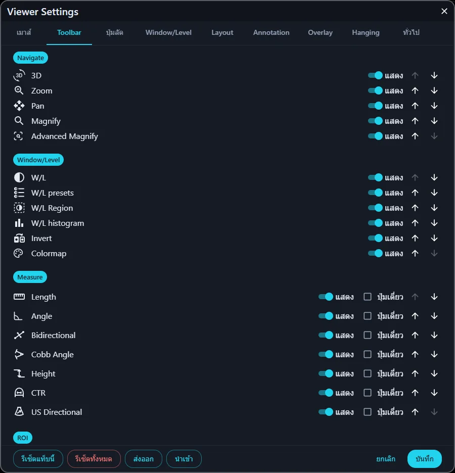
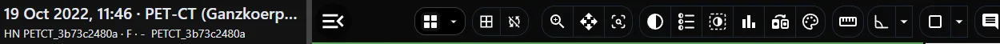
- แสดง (สวิตช์) = แสดงเครื่องมือบน toolbar — เครื่องมือที่ซ่อนยังใช้ผ่านคีย์ลัดได้
- ปุ่มเดี่ยว (หมวด Measure / ROI / Annotate) = ดึงเครื่องมือออกจากเมนู ▾ มาเป็นปุ่มบน toolbar
- / = เลื่อนลำดับในเมนู / บน toolbar
- เครื่องมือ Reset oblique (MPR) ซ่อนเป็นค่าเริ่มต้น เปิดได้ที่นี่ · รายการแสดงทุกเครื่องมือของทั้ง 8 หมวดไม่ว่าช่องปัจจุบันจะใช้ได้หรือไม่ · ปุ่มแบบแผง (W/L presets, histogram, Colormap, Slab) ซ่อน/เรียงได้แต่ไม่มีคีย์ลัด · ซ่อน Save workspace / Reset layout / Save as protocol ครบ 3 ตัว = ปุ่ม Layout หายจาก toolbar · ปุ่ม Template, MPR, Ref Line, Layout grid, Sync, FPS ปรับที่นี่ไม่ได้
แท็บ ปุ่มลัด
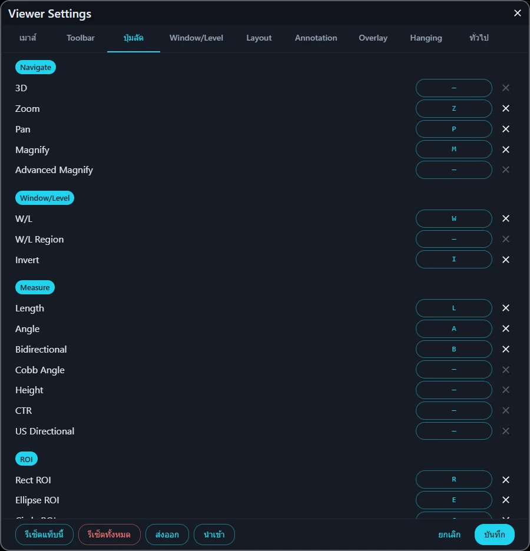
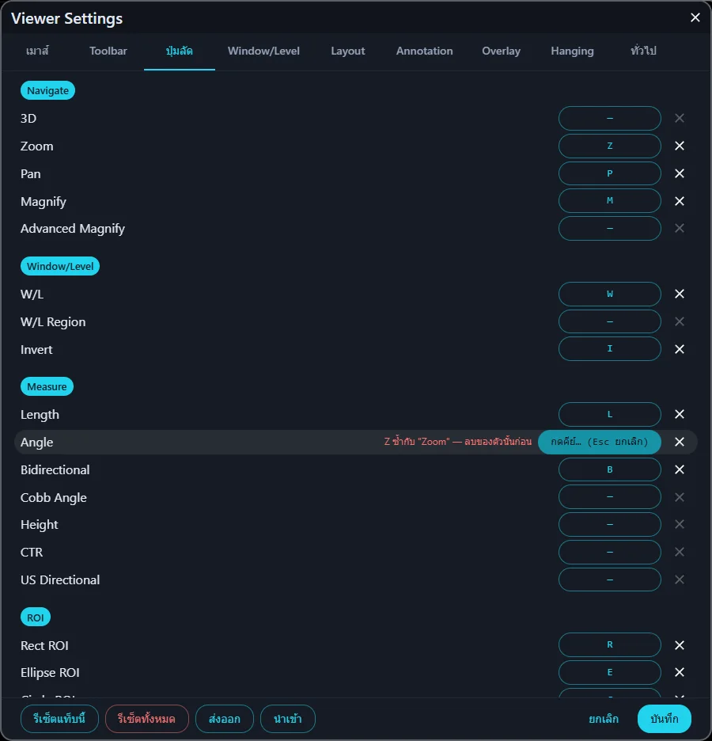
- คลิกช่องคีย์ของคำสั่ง — ช่องเปลี่ยนเป็น “กดคีย์… (Esc ยกเลิก)”
- กดคีย์หรือคีย์ผสมที่ต้องการ (เช่น Shift+K) · กด เพื่อไม่ใช้คีย์ลัดสำหรับคำสั่งนั้น
- กด บันทึก
- คีย์ซ้ำกับคำสั่งอื่นจะขึ้น “… ซ้ำกับ … — ลบของตัวนั้นก่อน” · คีย์ต้องห้ามขึ้น “… ใช้ไม่ได้ (browser หรือ viewer ใช้อยู่แล้ว)”
- ตั้งได้: A–Z, 0, F1–F12, Home / End / PageUp / PageDown / Insert / Space และเครื่องหมาย
. , / ; ' [ ] - = \ `เดี่ยว ๆ หรือร่วมกับ Ctrl / Alt / Shift (Cmd บน Mac นับเป็น Ctrl) · กดแค่ Ctrl/Shift/Alt ระบบจะรอคีย์จริง · คลิกช่องเดิมซ้ำหรือคลิกที่อื่น = ยกเลิก - ใช้ไม่ได้: Delete, Backspace, Tab, ลูกศร, Enter, Esc, 1–9 (W/L preset), F5, F11, F12 และคีย์ของเบราว์เซอร์ เช่น Ctrl+W/T/N/R/L/D/P/F/S/O/H/J/U/A/C/V/X/0/-/=, Ctrl+Tab, Ctrl+PageUp/PageDown, Ctrl+Shift+I/J/C/R/W/T/N, Alt+←/→, Alt+Home, Alt+D, Alt+F4
- นอกจากเครื่องมือทุกหมวดแล้ว ยังตั้งคีย์ให้คำสั่งของช่องภาพได้: หมุน 90° ตามเข็ม / ทวนเข็ม, พลิกแนวนอน / แนวตั้ง, รีเซ็ตมุมมอง, Phase ก่อนหน้า / ถัดไป
- ค่าเริ่มต้นดูที่ คีย์ลัดเริ่มต้น
ตั้งค่า (Viewer Settings)
Window/Level · Layout
จัดการ W/L preset ของแต่ละ modality และผังหน้าจอ/พฤติกรรมตอนเปิด Viewer
แท็บ Window/Level
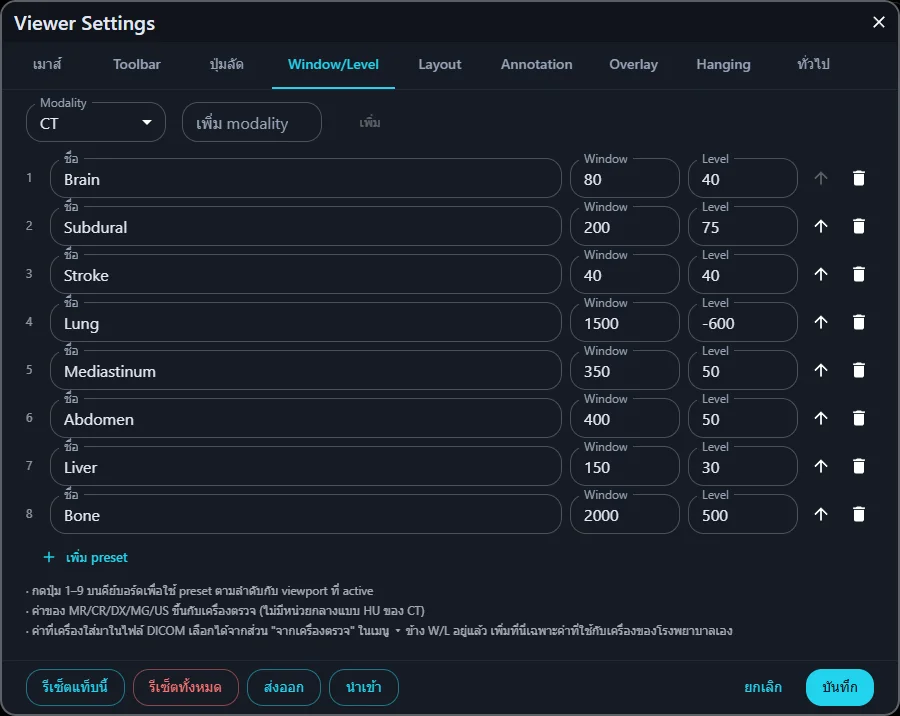
- เลือก Modality (หรือพิมพ์ modality ใหม่ A–Z / 0–9 ไม่เกิน 16 ตัวในช่อง “เพิ่ม modality” แล้วกด เพิ่ม) · ค่าเริ่มต้นมีเฉพาะ CT 8 ชุด · ลบ modality ทั้งรายการไม่ได้ ทำได้แค่ลบ preset จนว่าง
- แก้ ชื่อ, Window, Level ของแต่ละ preset · เลื่อนขึ้น (ลำดับ = ปุ่ม 1–9) · ลบ
- กด เพิ่ม preset (ได้ “Preset n” W400 / L40 — สูงสุด 9 ต่อ modality) แล้วกด บันทึก
preset ที่ไม่มีชื่อจะถูกทิ้งตอนบันทึก (ชื่อยาวเกิน 40 ตัวถูกตัด) · Window 1–65536 · Level −32768–65535 (ค่านอกช่วงถูกปรับให้โดยไม่เตือน) · มีปุ่มเลื่อนขึ้นอย่างเดียว · ค่า W/L ที่มากับไฟล์ DICOM ยังเลือกได้จากส่วน “จากเครื่องตรวจ” ในเมนู W/L presets
แท็บ Layout
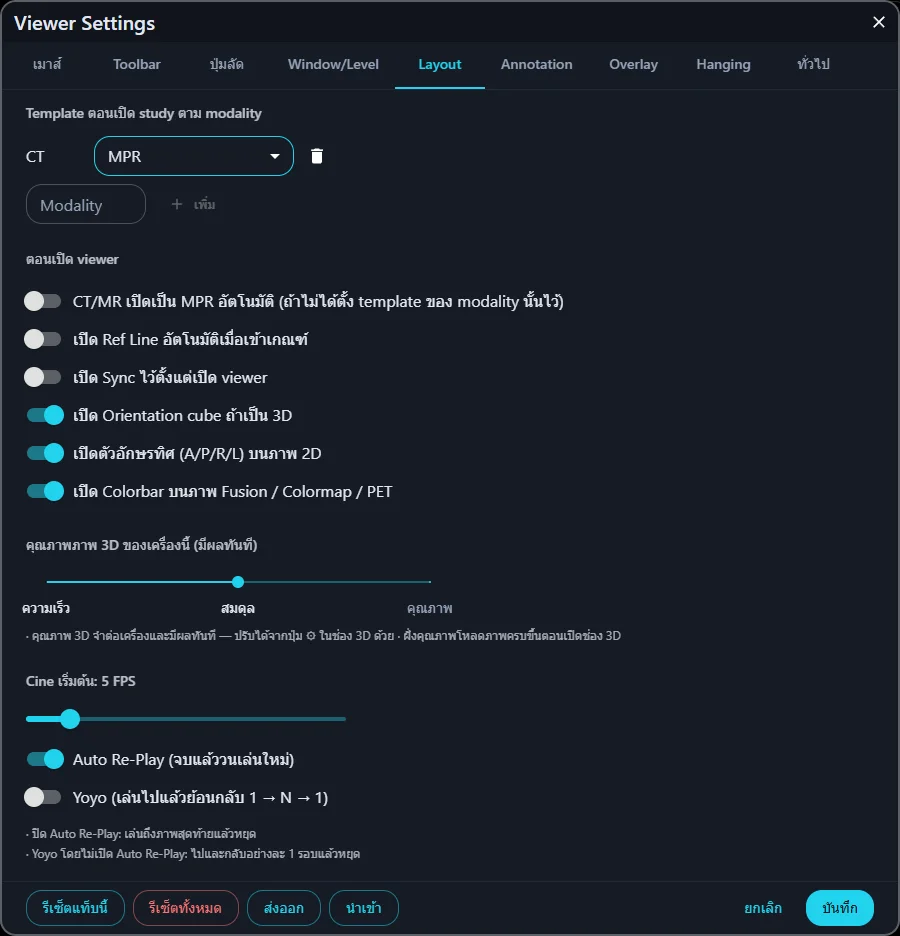
| ส่วน | ตั้งค่า |
|---|---|
| Template ตอนเปิด study ตาม modality | ค่าเริ่มต้นว่าง — พิมพ์ modality แล้วกด + เพิ่ม ได้แถวใหม่ (ค่าเริ่ม MPR) ลบด้วย · เลือกได้ Default (1x1), MPR, Axial / Coronal / Sagittal primary, 3D four up / main / primary / only, Fusion, Fusion MPR, Fusion prior · ใช้เฉพาะ desktop |
| ตอนเปิด viewer | CT/MR เปิดเป็น MPR อัตโนมัติ (ถ้าไม่ได้ตั้ง template ของ modality นั้นไว้) — ปิด · เปิด Ref Line อัตโนมัติเมื่อเข้าเกณฑ์ — ปิด · เปิด Sync ไว้ตั้งแต่เปิด viewer — ปิด · เปิด Orientation cube ถ้าเป็น 3D — เปิด · เปิดตัวอักษรทิศ (A/P/R/L) บนภาพ 2D — เปิด · Colorbar บนภาพ Fusion / Colormap / PET — เปิด (ปุ่มบน toolbar สลับเฉพาะครั้งนี้) |
| คุณภาพภาพ 3D ของเครื่องนี้ | 5 ระดับ ความเร็ว — สมดุล — คุณภาพ (ค่าเริ่ม สมดุล · มีผลเมื่อปล่อยเมาส์ · จำต่อคอมพิวเตอร์ ไม่ขึ้นกับ บันทึก/ยกเลิก/รีเซ็ต/ส่งออก) · ปรับจากปุ่ม บนช่อง 3D ได้เช่นกัน |
| Cine เริ่มต้น | FPS 1–30 (ค่าเริ่มต้น 5 — แถบ FPS บน toolbar ใช้เฉพาะครั้งนี้) · Auto Re-Play (จบแล้ววนเล่นใหม่ — เปิด; ปิด = เล่นถึงภาพสุดท้ายแล้วหยุด) · Yoyo (เล่นไปแล้วย้อนกลับ — ปิด; เปิดโดยไม่ Re-Play = ไปและกลับอย่างละรอบ) · มีผลทันทีแม้กำลังเล่นอยู่ |
ตั้งค่า (Viewer Settings)
Annotation · Overlay · Hanging · ทั่วไป
หน้าตาของค่าวัด ข้อมูลมุมภาพ กฎจัดผังหน้าจอ และภาษา
แท็บ Annotation
| ตั้งค่า | ค่าเริ่มต้น |
|---|---|
| สี: ปกติ / ตอนเลือก / ของผู้ใช้อื่น | เหลือง #ffff00 / เขียว #00dc00 / ฟ้า #82beff |
| กล่องดำหลังป้ายกระดูกสันหลัง (Spine Label) · กล่องดำหลังข้อความและตัวเลขค่าวัด | เปิดทั้งคู่ (สวิตช์แยกกัน) |
| ความหนาเส้น | 1 px (1–5) |
| ขนาดตัวอักษร | 14 px (10–24) |
| ทศนิยม (ตัวเลขบนภาพ + แท็บ ค่าวัด) | 2 (เลือก 0 / 1 / 2) — ใช้กับไฟล์ CSV ด้วย |
| ชนิด SUV ของค่าวัดบน PET | SUVbw — น้ำหนักตัว (เลือก SUVlbm — มวลกายไร้ไขมัน สูตร Janmahasatian หรือ SUVbsa — พื้นที่ผิวกาย สูตร DuBois ได้) · เปลี่ยนบนช่อง PET มีผลเฉพาะครั้งนั้น |
แท็บ Overlay
- ตั้งได้เฉพาะมุมซ้ายล่างและขวาล่าง (มุมบนเป็นปุ่มควบคุมของช่อง) · เลือกข้อมูลได้: ชื่อผู้ป่วย, HN, เพศ / อายุ, Modality, Zoom, Window / Level, ลำดับภาพ — ไม่เกิน 6 บรรทัดต่อมุม (เกินถูกตัด) · ไม่เลือกเลย = “— ไม่แสดง —”
- ลำดับบรรทัด = ลำดับที่เลือก (จะเรียงใหม่ให้เอาออกแล้วเลือกใหม่) · ค่าเริ่มต้น: มุมซ้ายล่าง Zoom, W/L, ลำดับภาพ · มุมขวาล่าง ไม่แสดง · บนภาพแสดงเป็น “HN …”, “Zoom: n%”, “W: … L: …”, “Img: n / N” — ข้อมูลที่ภาพไม่มีจะข้ามบรรทัดนั้น และลำดับภาพไม่แสดงในช่อง 3D
แท็บ Hanging
- แต่ละกฎมีสวิตช์เปิดใช้ ชื่อ และสรุปเงื่อนไข · ปุ่ม เรียงลำดับ (กฎแรกที่ตรงถูกใช้) · แก้ · ทำซ้ำ · ลบ
- เพิ่มกฎ (สูงสุด 30 — กฎใหม่ชื่อ “Protocol ใหม่” ผัง 1x2 ต่อท้ายรายการ): ชื่อกฎ (≤ 60 ตัว) · Modality หลัก (≤ 10 ตัว คั่นด้วยคอมมา) · Body part / Study description (regex ≤ 200 ตัว ไม่สนตัวพิมพ์ ช่องว่าง = ไม่ใช้เงื่อนไข) · series อย่างน้อย (1–99) · Layout: Grid 1x1–3x3 หรือ template MPR / 3D / Fusion (กลุ่มนี้ระบบเลือก series หลักเอง ไม่มีช่องให้กำหนด) · แต่ละช่อง: ว่าง (checkbox) · จาก (study นี้ / prior ล่าสุด / prior ครั้งที่ 2 / prior ครั้งที่ 3) · Modality · Series description (regex) · ตัวที่ (1–99 — เมื่อหลาย series ตรงเงื่อนไขใช้ตัวที่เท่าไร นับเฉพาะที่ช่องก่อนหน้ายังไม่ใช้) · ข้าง R / L · ท่า (CC, MLO, ML, LM, XCCL, XCCM, FB, SIO, LMO, AT, CV) — ใส่ข้างหรือท่าแล้วช่องนั้นไม่ใช้ series สำรอง (หาไม่เจอ = ว่าง) · Prior: study description (regex) โผล่เมื่อมีช่องที่ “จาก” = prior · ไอคอน ⓘ อธิบาย regex และ “ตัวที่”
- กฎที่ regex ผิดรูปแบบหรือยาวเกินมีป้าย “ไม่สมบูรณ์ — จะถูกทิ้งตอนบันทึก” (ชื่อว่างบันทึกเป็น “Protocol”) · regex ของช่องที่ผิดไม่มีป้าย — ตอนบันทึกเงื่อนไขช่องนั้นหายกลายเป็น “series ใดก็ได้” · ตอนแก้กฎมีส่วน “ทดสอบกับ study ที่เปิดอยู่” บอกว่ากฎตรงไหม และช่องไหนได้ series อะไร (ตัวสำรอง / ไม่มี prior / ไม่มีภาพข้างท่านี้) · ทำซ้ำได้ชื่อต่อท้าย “(copy)” · ลบทันทีไม่ถามยืนยัน (กด ยกเลิก เพื่อคืน)
- สร้างกฎจากหน้าจอปัจจุบันได้เร็วที่สุดด้วย Layout › Save as protocol
แท็บ ทั่วไป — ภาษา
ป้าย “ภาษา / Language” เป็นสองภาษาเสมอ · ภาษาเปลี่ยนทันทีโดยไม่ต้องโหลดใหม่ (ค่าเริ่มต้นภาษาไทย) แต่ต้องกด บันทึก จึงจำ — ยกเลิก = กลับภาษาเดิม · ศัพท์เฉพาะทาง (Series, W/L, MPR, ROI, SUV …), ชื่อเครื่องมือบน toolbar, หัวหน้าต่าง “Viewer Settings”, ชื่อแท็บ, วันที่ ตัวเลข และข้อความผิดพลาดจากเซิร์ฟเวอร์ คงเดิมทั้งสองภาษา · ข้อความบนภาพ (annotation) วาดใหม่ตามภาษา · มือถือใช้ภาษาที่บันทึกไว้จาก desktop
อื่น ๆ
ใช้งานบนมือถือ / แท็บเล็ต
บนมือถือและแท็บเล็ต Viewer ปรับเป็นโหมดเรียบง่ายสำหรับดูภาพเร็ว ประหยัดหน่วยความจำ
- แสดงทีละ 1 ช่อง (1×1) แบบ stack · ภาพเป็น JPEG ที่เซิร์ฟเวอร์สร้างให้ ความละเอียดลดลง (เช่น CR/DX 1024 px, MG 1536 px — โหลดเร็ว) · ภาพ multi-frame กางทีละเฟรม
- Toolbar มี 5 ปุ่ม: W/L, W/L presets, Invert, Colormap, FPS
- แถบข้างปิดอยู่ตอนเริ่ม แตะ เพื่อเปิด แตะ หรือพื้นหลังเพื่อปิด · ไม่มีแท็บค่าวัด
- 1 นิ้ว = เลื่อนภาพ (Pan) · บีบ 2 นิ้ว = Zoom · เลื่อนเฟรมด้วยแถบเลื่อนภาพ
- ไม่มีบนมือถือ: MPR, 3D, Fusion, SEG/RTSTRUCT, Print, ปัก key image, workspace, Viewer Settings, เมนูคลิกขวา, การวัด · Key image ดูและกระโดดจากแถบข้างได้ · ค่าตั้งที่บันทึกจาก desktop (ภาษา, W/L preset) ยังถูกใช้
อื่น ๆ
คำถามที่พบบ่อย
อาการที่พบบ่อย สาเหตุ และวิธีแก้
การเปิดและการโหลด
| อาการ | สาเหตุ / วิธีแก้ |
|---|---|
| กด Open Viewer แล้วไม่มีหน้าต่าง | เบราว์เซอร์บล็อกป๊อปอัป — อนุญาตป๊อปอัปของเว็บไซต์ VNA |
| ขึ้น “ไม่พบ Study หรือ Study นี้อยู่นอกขอบเขตแผนกของคุณ” | การตรวจถูกลบ อยู่นอกแผนก หรือเป็น VIP ของผู้อื่น |
| กดปุ่ม toolbar ไม่ได้ | กำลังโหลดภาพอยู่ — รอให้แถบความคืบหน้าหายไป |
| ไม่มีปุ่มเต็มจอ | ใช้ F11 ของเบราว์เซอร์ |
| ปุ่ม Layout (workspace) หายจาก toolbar | Save workspace / Reset layout / Save as protocol ถูกซ่อนครบทั้ง 3 ใน Settings › Toolbar — เปิดอย่างน้อย 1 ตัว |
| ปุ่มบน toolbar หายไปบางส่วน | หน้าต่างแคบ — ปุ่มถูกยุบเข้าเมนู · หรือถูกซ่อนใน Settings › Toolbar · หรือใช้ไม่ได้กับภาพชนิดนั้น |
การดูภาพ
| อาการ | สาเหตุ / วิธีแก้ |
|---|---|
| series ไม่มีป้าย MPR / ขึ้น “Series นี้ทำ MPR / 3D ไม่ได้” | ภาพน้อยกว่า 40 ภาพ ระยะห่างไม่เท่ากัน หรือมีหลาย echo ปนกัน — ดูแบบ 2D |
| ปุ่มขวาของเมาส์ไม่เปิดเมนู | ปุ่มขวาใช้ปรับ W/L — กด Shift + คลิกขวา หรือตั้งปุ่มขวาเป็น “— ไม่ใช้ —” |
| ซ้อน Fusion ไม่ได้ | PET และ CT อยู่คนละ Frame of Reference |
| คลิก SEG แล้วไม่ซ้อน | ยังไม่ได้เปิด series ต้นทาง หรือ SEG ไม่มีบริเวณที่ตัดไว้ / เป็นชนิดที่ยังไม่รองรับ |
| ปุ่มลูกศรบนคีย์บอร์ดไม่เลื่อนภาพ | ใช้ล้อเมาส์หรือแถบเลื่อนภาพแทน (ลูกศรสงวนไว้) |
| กด 1–9 แล้ว W/L preset ไม่เปลี่ยน | modality นั้นยังไม่มี preset (ค่าเริ่มต้นมีเฉพาะ CT — เพิ่มใน Settings › Window/Level) · ช่องที่ active ไม่มีภาพ · หรือกดพร้อม Shift/Ctrl |
| ภาพ MG ไม่เรียง 1x4 / ช่องว่าง | series ไม่มีข้อมูลข้างและท่า (ImageLaterality / ViewPosition) และชื่อ series ไม่บอก เช่น “R CC” — ลากภาพเอง |
การบันทึก
| คำถาม | คำตอบ |
|---|---|
| ค่าวัดหายเมื่อเปิดใหม่ | เปิดจาก HIS หรือภาพไม่มีข้อมูล Study/Series — ค่าวัดไม่ถูกบันทึกในกรณีนี้ · PET VOI และ ECG caliper ไม่บันทึกเสมอ |
| ต้องกดบันทึกค่าวัดไหม | ไม่ต้อง — บันทึกอัตโนมัติราว 1 วินาทีหลังแก้ไข |
| ผู้อื่นเห็นค่าวัด / key image ของฉันไหม | เห็น (แสดงเป็นอีกสีและแก้ไม่ได้) |
| ลบค่าวัดของคนอื่นได้ไหม | ไม่ได้ — ค่าวัดของผู้อื่นล็อกไว้ (อ่านอย่างเดียว) Delete และ Clear จะข้าม |
| นำเข้าไฟล์ค่าตั้งของเพื่อนแล้วค่าของฉันหาย | นำเข้าแทนที่ค่าทั้งหมด — ส่งออกค่าของตัวเองเก็บไว้ก่อนนำเข้า แล้วกด ยกเลิก ถ้ายังไม่ได้บันทึก |
| ค่าตั้งของฉันใช้กับเครื่องอื่นได้ไหม | ได้ — เก็บบนเซิร์ฟเวอร์ตามบัญชี (ยกเว้นคุณภาพ 3D ซึ่งจำต่อเครื่อง) · ใช้ ส่งออก / นำเข้า เพื่อแบ่งปันให้ผู้อื่น |